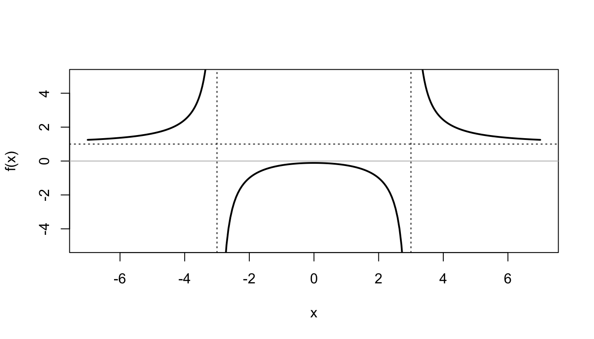
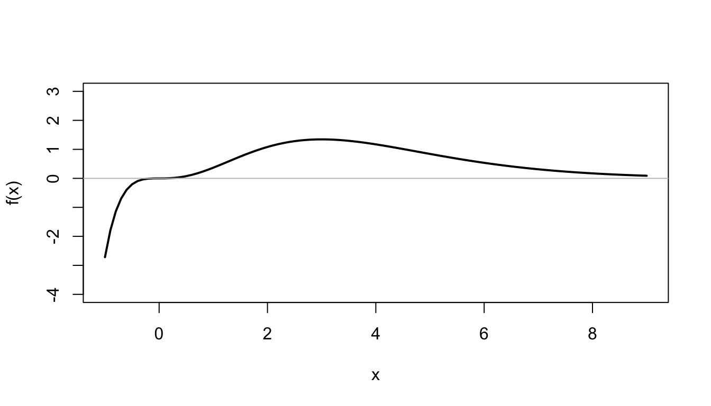
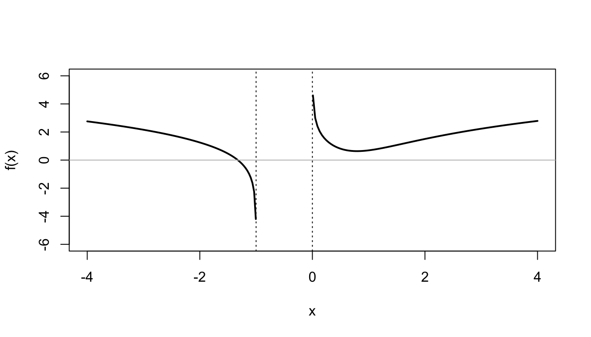
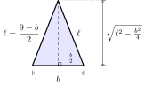
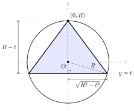
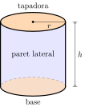
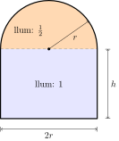

Tema 2. Càlcul diferencial en una variable
Llista 1. Càlcul diferencial en una variable
Exercici 1
Calculau el domini de les funcions següents:
a)
\[f(x)=\ln\bigl(\sqrt{3x+1}\bigr)\]
Solució
L’arrel quadrada existeix si el seu argument és positiu o zero, \(3x+1\geq0\), i el logaritme existeix si el seu argument és estrictament positiu, \(\sqrt{3x+1}>0\), és a dir, \(3x+1>0\). La segona condició ja inclou la primera: \[3x+1>0\iff x>-\frac13.\] Per tant, \[\operatorname{Dom}(f)=\left(-\frac13,+\infty\right).\]
b)
\[f(x)=\frac{\sqrt{9-x^2}-5}{x}\]
Solució
L’arrel quadrada exigeix \(9-x^2\geq0\). Les solucions de \(9-x^2=0\) són \(x=-3\) i \(x=3\), i el signe de \(9-x^2\) és:
| \(x\) | \((-\infty,-3)\) | \(-3\) | \((-3,3)\) | \(3\) | \((3,+\infty)\) |
|---|---|---|---|---|---|
| \(9-x^2\) | \(-\) | \(0\) | \(+\) | \(0\) | \(-\) |
La solució de la inequació és \([-3,3]\). D’altra banda, el quocient no existeix on s’anul·la el denominador, \(x=0\). Per tant, \[\operatorname{Dom}(f)=[-3,0)\cup(0,3].\]
c)
\[f(x)=\sin\left(\sqrt{\frac{1+x}{1-x}}\right)\]
Solució
El sinus està definit en tot \(\mathbb R\), de manera que només cal que existeixi l’arrel: \(\frac{1+x}{1-x}\geq0\), amb \(x\ne1\). El numerador s’anul·la en \(x=-1\) i el denominador en \(x=1\):
| \(x\) | \((-\infty,-1)\) | \(-1\) | \((-1,1)\) | \(1\) | \((1,+\infty)\) |
|---|---|---|---|---|---|
| \(1+x\) | \(-\) | \(0\) | \(+\) | \(+\) | \(+\) |
| \(1-x\) | \(+\) | \(+\) | \(+\) | \(0\) | \(-\) |
| \(\frac{1+x}{1-x}\) | \(-\) | \(0\) | \(+\) | \(\nexists\) | \(-\) |
Per tant, \[\operatorname{Dom}(f)=[-1,1).\]
d)
\[f(x)=\frac{\sqrt[3]{1-x^4-x^2}}{x^2+1}\]
Solució
L’arrel cúbica té índex senar i existeix per a qualsevol nombre real, de manera que el numerador està definit en tot \(\mathbb R\). El denominador no s’anul·la mai, perquè \(x^2+1\geq1>0\). Així, \(\operatorname{Dom}(f)=\mathbb R\).
e)
\[f(x)=\ln|2-x^2|\]
Solució
El logaritme exigeix \(|2-x^2|>0\). Com que un valor absolut és sempre positiu o zero, només cal excloure els punts on \(2-x^2=0\), és a dir, \(x=\pm\sqrt2\). Per tant, \[\operatorname{Dom}(f)=\mathbb R\setminus\{-\sqrt2,\sqrt2\}. \]
f)
\[f(x)=\frac{\sqrt{2x^2+1}}{3x-5}\]
Solució
El radicand compleix \(2x^2+1\geq1>0\) per a tot \(x\in\mathbb R\), de manera que l’arrel sempre existeix. Només cal excloure el zero del denominador, \(3x-5=0\iff x=\frac53\): \[\operatorname{Dom}(f)=\mathbb R\setminus\left\{\frac53\right\}. \]
g)
\[f(x)=\ln\left(\frac{x^2-2x}{x^2-5x+6}\right)\]
Solució
El logaritme exigeix que el seu argument sigui estrictament positiu. Factoritzant, \[\frac{x^2-2x}{x^2-5x+6}=\frac{x(x-2)}{(x-2)(x-3)}>0.\] El numerador s’anul·la en \(x=0\) i \(x=2\), i el denominador en \(x=2\) i \(x=3\). Estudiam el signe del quocient, tenint en compte que no existeix on s’anul·la el denominador:
| \(x\) | \((-\infty,0)\) | \(0\) | \((0,2)\) | \(2\) | \((2,3)\) | \(3\) | \((3,+\infty)\) |
|---|---|---|---|---|---|---|---|
| \(x(x-2)\) | \(+\) | \(0\) | \(-\) | \(0\) | \(+\) | \(+\) | \(+\) |
| \((x-2)(x-3)\) | \(+\) | \(+\) | \(+\) | \(0\) | \(-\) | \(0\) | \(+\) |
| quocient | \(+\) | \(0\) | \(-\) | \(\nexists\) | \(-\) | \(\nexists\) | \(+\) |
Per tant, \[\operatorname{Dom}(f)=(-\infty,0)\cup(3,+\infty).\]
h)
\[f(x)=\frac{\sin(2x)}{\cos x}\]
Solució
El sinus i el cosinus estan definits en tot \(\mathbb R\); només cal excloure els zeros del denominador, \(\cos x=0\iff x=\frac\pi2+k\pi\): \[\operatorname{Dom}(f)=\mathbb R\setminus\left\{\frac\pi2+k\pi:k\in\mathbb Z\right\}.\]
Exercici 2
Calculau els límits següents sense emprar la regla de L’Hôpital-Bernoulli:
a)
\[\lim_{x\to0}\frac{|x|}{x+x^2}\]
Solució
El valor absolut canvia d’expressió en el punt on es demana el límit: \(|x|=-x\) si \(x<0\) i \(|x|=x\) si \(x>0\). Calculam els límits laterals: \[\lim_{x\to0^-}\frac{|x|}{x+x^2}=\lim_{x\to0^-}\frac{-x}{x(1+x)}=\lim_{x\to0^-}\frac{-1}{1+x}=-1,\] \[\lim_{x\to0^+}\frac{|x|}{x+x^2}=\lim_{x\to0^+}\frac{x}{x(1+x)}=\lim_{x\to0^+}\frac{1}{1+x}=1.\] Com que els límits laterals són diferents, el límit no existeix.
b)
\[\lim_{x\to a}\frac{x^2-(a+1)x+a}{x^3-a^3}\]
Solució
En \(x=a\) el numerador val \(a^2-(a+1)a+a=0\) i el denominador també val \(0\): indeterminació \(0/0\). Tots dos polinomis tenen el factor \((x-a)\): \[x^2-(a+1)x+a=(x-a)(x-1),\qquad x^3-a^3=(x-a)(x^2+ax+a^2).\] Per tant, \[\lim_{x\to a}\frac{x^2-(a+1)x+a}{x^3-a^3}=\lim_{x\to a}\frac{(x-a)(x-1)}{(x-a)(x^2+ax+a^2)}=\lim_{x\to a}\frac{x-1}{x^2+ax+a^2}.\]
- Si \(a\ne0\), el denominador tendeix a \(3a^2\ne0\) i el límit és \(\dfrac{a-1}{3a^2}\).
- Si \(a=0\), el límit és \(\displaystyle\lim_{x\to0}\frac{x-1}{x^2}\). El numerador tendeix a \(-1\) i el denominador tendeix a \(0\) amb valors positius, de manera que el límit és \(-\infty\).
c)
\[\lim_{x\to0^+}\sqrt{x}\,e^{\sin(\pi/x)}\]
Solució
Tenim \(\lim_{x\to0^+}\sqrt x=0\). D’altra banda, \(\sin(\pi/x)\) no té límit en \(0\), però \(-1\leq\sin(\pi/x)\leq1\) i, com que l’exponencial és creixent, \[0<e^{\sin(\pi/x)}\leq e\qquad\text{per a tot }x>0.\] És a dir, \(e^{\sin(\pi/x)}\) està fitada. Pel criteri \(0\cdot\)fitada, \[\lim_{x\to0^+}\sqrt{x}\,e^{\sin(\pi/x)}=0.\]
d)
\[\lim_{x\to0}\left(1+x^2\sin\frac1x\right)^{1/x}\]
Solució
Com que \(x^2\to0\) i \(\sin(1/x)\) està fitada, pel criteri \(0\cdot\)fitada la base tendeix a \(1\), mentre que l’exponent \(1/x\) no està fitat. És una indeterminació \(1^\infty\), que resolem amb la identitat \[\lim_{x\to a}f(x)^{g(x)}=e^{\lim\limits_{x\to a}(f(x)-1)\,g(x)}.\] En aquest cas, \[\lim_{x\to0}\left(1+x^2\sin\frac1x-1\right)\frac1x=\lim_{x\to0}x\sin\frac1x=0,\] de nou pel criteri \(0\cdot\)fitada. Per tant, el límit demanat és \(e^0=1\).
e)
\[\lim_{x\to0}\left(\frac2{\sin^2x}-\frac1{1-\cos x}\right)\]
Solució
És una indeterminació \(\infty-\infty\), que tractam amb el denominador comú. Com que \(\sin^2x=1-\cos^2x=(1-\cos x)(1+\cos x)\), per a \(x\ne0\) proper a zero tenim \[\frac2{\sin^2x}-\frac1{1-\cos x}=\frac{2-(1+\cos x)}{(1-\cos x)(1+\cos x)}=\frac{1-\cos x}{(1-\cos x)(1+\cos x)}=\frac1{1+\cos x}.\] Per tant, \[\lim_{x\to0}\left(\frac2{\sin^2x}-\frac1{1-\cos x}\right)=\lim_{x\to0}\frac1{1+\cos x}=\frac12.\]
f)
\[\lim_{x\to1}\frac{|x-1|-|x+1|}{|x|}\]
Solució
No hi ha cap indeterminació. El numerador i el denominador són funcions contínues i el denominador no s’anul·la en \(x=1\); per les propietats dels límits, n’hi ha prou amb substituir: \[\lim_{x\to1}\frac{|x-1|-|x+1|}{|x|}=\frac{0-2}{1}=-2.\]
g)
\[\lim_{x\to1}\frac{\sqrt[3]{x^2}-2\sqrt[3]{x}+1}{(x-1)^2}\]
Solució
Tenim una indeterminació \(0/0\) amb arrels cúbiques. Feim el canvi de variable \(t=\sqrt[3]x\), o equivalentment \(t^3=x\). Si \(x\to1\), aleshores \(t\to1\), i \(\sqrt[3]{x^2}=t^2\). El límit es transforma en \[\lim_{t\to1}\frac{t^2-2t+1}{(t^3-1)^2}=\lim_{t\to1}\frac{(t-1)^2}{(t-1)^2(t^2+t+1)^2}=\lim_{t\to1}\frac1{(t^2+t+1)^2}=\frac19.\]
h)
\[\lim_{x\to+\infty}x^{1/(1-\ln x)}\]
Solució
La base tendeix a \(+\infty\) i l’exponent a \(0\): indeterminació \(\infty^0\). Aplicam logaritmes: \[\lim_{x\to+\infty}x^{1/(1-\ln x)}=e^{\lim\limits_{x\to+\infty}\frac{\ln x}{1-\ln x}}.\] Dividint numerador i denominador per \(\ln x\), \[\lim_{x\to+\infty}\frac{\ln x}{1-\ln x}=\lim_{x\to+\infty}\frac{1}{\frac1{\ln x}-1}=\frac1{0-1}=-1.\] Per tant, el límit és \(e^{-1}\).
i)
\[\lim_{x\to2}\left(\frac3{x+1}\right)^{\frac{x^2+2x+5}{x^2-x-2}}\]
Solució
La base tendeix a \(3/3=1\). A l’exponent, \(x^2-x-2=(x-2)(x+1)\to0\) mentre que \(x^2+2x+5\to13\), de manera que l’exponent no està fitat: indeterminació \(1^\infty\). Aplicam la identitat \(\lim f^g=e^{\lim (f-1)g}\): \[\left(\frac3{x+1}-1\right)\frac{x^2+2x+5}{(x-2)(x+1)}=\frac{2-x}{x+1}\cdot\frac{x^2+2x+5}{(x-2)(x+1)}=-\frac{x^2+2x+5}{(x+1)^2}.\] Aquesta expressió tendeix a \(-\frac{13}{9}\) quan \(x\to2\). Per tant, el límit demanat és \(e^{-13/9}\).
j)
\[\lim_{x\to0}\frac{\sqrt[4]{x^4+1}-\sqrt{x^2+1}}{x^2}\]
Solució
Tenim una indeterminació \(0/0\) amb expressions irracionals. Escrivim \(A=\sqrt[4]{x^4+1}\) i \(B=\sqrt{x^2+1}\), de manera que \(A^4=x^4+1\) i \(B^4=(x^2+1)^2\). Com en la tècnica del conjugat, multiplicam i dividim per \((A+B)(A^2+B^2)\), ja que \[(A-B)(A+B)(A^2+B^2)=(A^2-B^2)(A^2+B^2)=A^4-B^4=x^4+1-(x^2+1)^2=-2x^2.\] Així, \[\frac{A-B}{x^2}=\frac{-2x^2}{x^2(A+B)(A^2+B^2)}=\frac{-2}{(A+B)(A^2+B^2)}.\] Quan \(x\to0\), \(A\to1\) i \(B\to1\). Per tant, el límit és \(\dfrac{-2}{2\cdot2}=-\dfrac12\).
Exercici 3
Provau que la funció següent no té límit en \(x=0\): \[f(x)=\begin{cases}\sin\!\left(\dfrac{\pi}{2x}\right),&x\ne0,\\0,&x=0.\end{cases}\]
Solució
Empram la caracterització del límit per successions. Consideram les successions \(x_n=\frac1{4n+1}\) i \(y_n=\frac1{4n+3}\), amb termes diferents de zero i tals que \[\lim_{n\to\infty}x_n=0=\lim_{n\to\infty}y_n.\] Calculam les successions de les imatges: \[f(x_n)=\sin\frac{(4n+1)\pi}{2}=\sin\left(2n\pi+\frac\pi2\right)=1,\qquad f(y_n)=\sin\frac{(4n+3)\pi}{2}=\sin\left(2n\pi+\frac{3\pi}2\right)=-1.\] Com que \(\lim_{n\to\infty}f(x_n)=1\ne-1=\lim_{n\to\infty}f(y_n)\), deduïm que no existeix \(\lim_{x\to0}f(x)\).
Exercici 4
Com s’hauria de definir \(f(x)=5x\sin\left(\dfrac\pi{2x}\right)\) en \(x=0\) perquè fos contínua en \(\mathbb R\)?
Solució
Per a \(x\ne0\), \(f\) és contínua per ser producte d’un polinomi i de la composició del sinus amb un quocient de polinomis. Perquè també ho sigui en \(0\), cal definir \(f(0)=\lim_{x\to0}f(x)\). Com que \(\lim_{x\to0}5x=0\) i \(\left|\sin\frac\pi{2x}\right|\leq1\) per a tot \(x\ne0\), el criteri \(0\cdot\)fitada dona \[\lim_{x\to0}5x\sin\frac\pi{2x}=0.\] Per tant, cal definir \(f(0)=0\).
Exercici 5
Determinau els valors de \(a,b\in\mathbb R\) perquè la funció \[f(x)=\frac{x^2-2x+b}{x^3+ax^2-14x}\] tingui una discontinuïtat evitable en \(x=2\) i classificau totes les discontinuïtats.
Solució
\(f\) és un quocient de polinomis, de manera que és contínua en tots els punts on no s’anul·la el denominador. Per tenir una discontinuïtat en \(x=2\), el denominador s’hi ha d’anul·lar: \[8+4a-28=0\quad\Longrightarrow\quad a=5.\] Aleshores, el denominador és \(x^3+5x^2-14x=x(x^2+5x-14)=x(x-2)(x+7)\). Perquè la discontinuïtat sigui evitable, el límit en \(2\) ha de ser finit. Si el numerador no s’anul·lés en \(2\), el quocient tendiria a infinit; per tant, cal que \(4-4+b=0\), és a dir, \(b=0\). Amb \(a=5\) i \(b=0\), \[f(x)=\frac{x(x-2)}{x(x-2)(x+7)}=\frac1{x+7},\qquad x\ne-7,0,2.\] Classificam les discontinuïtats, que són els zeros del denominador:
- En \(x=0\): \(f(0)\) no existeix i \(\lim_{x\to0}f(x)=\frac17\). Discontinuïtat evitable.
- En \(x=2\): \(f(2)\) no existeix i \(\lim_{x\to2}f(x)=\frac19\). Discontinuïtat evitable.
- En \(x=-7\): \(\lim_{x\to-7^-}\frac1{x+7}=-\infty\) i \(\lim_{x\to-7^+}\frac1{x+7}=+\infty\). Els límits laterals no són finits: discontinuïtat de segona espècie o essencial.
Exercici 6
Estudiau la continuïtat de la funció \[f(x)=\begin{cases}\dfrac{x-1}{1+e^{1/(x-1)}},&x\ne1,\\0,&x=1.\end{cases}\]
Solució
Per a \(x\ne1\), \(f\) és contínua: és quocient de funcions contínues i el denominador no s’anul·la, ja que \(1+e^{1/(x-1)}>1\). Estudiam la continuïtat en \(x=1\) amb els límits laterals.
Si \(x\to1^-\), aleshores \(\frac1{x-1}\to-\infty\) i \(e^{1/(x-1)}\to0\): \[\lim_{x\to1^-}\frac{x-1}{1+e^{1/(x-1)}}=\frac{0}{1+0}=0.\] Si \(x\to1^+\), aleshores \(\frac1{x-1}\to+\infty\) i \(e^{1/(x-1)}\to+\infty\), de manera que el numerador tendeix a \(0\) i el denominador a \(+\infty\): \[\lim_{x\to1^+}\frac{x-1}{1+e^{1/(x-1)}}=0.\] Els dos límits laterals valen \(0=f(1)\). Per tant, \(f\) és contínua en \(x=1\) i, en conseqüència, en tot \(\mathbb R\).
Exercici 7
Calculau la derivada de les funcions següents:
a)
\[f(x)=\frac{x}{\sqrt{1-x^2}}\]
Solució
El domini és \((-1,1)\). Per la regla de la cadena, \(\left(\sqrt{1-x^2}\right)'=\dfrac{-x}{\sqrt{1-x^2}}\), i per la regla del quocient, \[f'(x)=\frac{\sqrt{1-x^2}-x\cdot\dfrac{-x}{\sqrt{1-x^2}}}{1-x^2}=\frac{(1-x^2)+x^2}{(1-x^2)\sqrt{1-x^2}}=\frac1{(1-x^2)^{3/2}},\qquad x\in(-1,1).\]
b)
\[f(x)=\arcsin(x^2+1)\]
Solució
L’arcsinus només està definit en \([-1,1]\), de manera que cal \(-1\leq x^2+1\leq1\), és a dir, \(x^2\leq0\). Això només passa en \(x=0\): el domini és \(\{0\}\). La derivada només està definida en punts interiors del domini, i \(0\) no és un punt interior de \(\{0\}\). Per tant, \(f\) no és derivable en cap punt. De fet, la regla de la cadena donaria \[\frac{2x}{\sqrt{1-(x^2+1)^2}}=\frac{2x}{\sqrt{-x^2(x^2+2)}},\] que no està definida per a cap \(x\) real.
c)
\[f(x)=e^{e^x}\]
Solució
Per la regla de la cadena, \[f'(x)=e^{e^x}\,(e^x)'=e^{e^x}\,e^x.\]
d)
\[f(x)=\frac{x|x|}{2}\]
Solució
Desfent el valor absolut, \[f(x)=\begin{cases}-\dfrac{x^2}2,&x<0,\\[1ex]\dfrac{x^2}2,&x\geq0.\end{cases}\] Cada tros és un polinomi; per tant, \(f\) és derivable en \((-\infty,0)\), amb \(f'(x)=-x\), i en \((0,+\infty)\), amb \(f'(x)=x\).
En el punt de ruptura \(x=0\), la funció és contínua, perquè els dos límits laterals valen \(0=f(0)\). Calculam les derivades laterals amb la definició: \[f'(0^-)=\lim_{h\to0^-}\frac{f(0+h)-f(0)}h=\lim_{h\to0^-}\frac{-h^2/2}{h}=\lim_{h\to0^-}\left(-\frac h2\right)=0,\] \[f'(0^+)=\lim_{h\to0^+}\frac{f(0+h)-f(0)}h=\lim_{h\to0^+}\frac{h^2/2}{h}=\lim_{h\to0^+}\frac h2=0.\] Les derivades laterals existeixen, són finites i coincideixen; per tant, \(f\) és derivable en \(0\) i \(f'(0)=0\). En resum, \(f'(x)=|x|\) per a tot \(x\in\mathbb R\).
e)
\[f(x)=\ln(\tan x)\]
Solució
La funció només està definida on \(\tan x>0\), és a dir, en els intervals \(\left(k\pi,k\pi+\frac\pi2\right)\), \(k\in\mathbb Z\). En aquests intervals, per la regla de la cadena, \[f'(x)=\frac{1}{\tan x}\cdot\frac1{\cos^2x}=\frac{\cos x}{\sin x}\cdot\frac1{\cos^2x}=\frac1{\sin x\cos x}.\]
f)
\[f(x)=\sqrt{x+\sqrt{x}}\]
Solució
El domini és \([0,+\infty)\). Per a \(x>0\), la regla de la cadena dona \[f'(x)=\frac{1}{2\sqrt{x+\sqrt{x}}}\left(1+\frac1{2\sqrt{x}}\right)=\frac{2\sqrt x+1}{4\sqrt x\,\sqrt{x+\sqrt x}}.\] El punt \(x=0\) no és interior al domini, de manera que la derivada no hi està definida. A més, el quocient incremental per la dreta no té límit finit: \[\lim_{h\to0^+}\frac{f(h)-f(0)}h=\lim_{h\to0^+}\frac{\sqrt{h+\sqrt h}}h=\lim_{h\to0^+}\sqrt{\frac1h+\frac1{h\sqrt h}}=+\infty,\] és a dir, la gràfica té tangent vertical en l’origen.
Exercici 8
Sigui \(f:\mathbb R\to\mathbb R\) derivable i tal que \(f(1)=0\). Calculau \(f'(1)\) sabent que \[f(x)+e^{f(x)}=x\quad\text{per a tot }x\in\mathbb R.\]
Solució
Les dues bandes de la igualtat són la mateixa funció de \(x\), de manera que també tenen la mateixa derivada. Derivant amb la regla de la cadena, \[f'(x)+e^{f(x)}f'(x)=1\quad\Longrightarrow\quad f'(x)=\frac1{1+e^{f(x)}}.\] Substituint \(x=1\) i \(f(1)=0\) obtenim \[f'(1)=\frac1{1+e^0}=\frac12.\]
Exercici 9
Calculau i provau la derivada \(n\)-èsima de \(f(x)=\dfrac1x\) i \(g(x)=e^{-3x}\).
Solució
Derivant successivament \(f(x)=x^{-1}\) obtenim \[f'(x)=-x^{-2},\qquad f''(x)=2x^{-3},\qquad f'''(x)=-6x^{-4},\] la qual cosa suggereix \[f^{(n)}(x)=\frac{(-1)^n n!}{x^{n+1}},\qquad x\ne0.\] Ho provam per inducció. Per a \(n=1\), la fórmula dona \(-1/x^2\), que és correcte. Si la fórmula és certa per a \(n\), aleshores \[f^{(n+1)}(x)=\left((-1)^n n!\,x^{-(n+1)}\right)'=(-1)^n n!\,\bigl(-(n+1)\bigr)x^{-(n+2)}=\frac{(-1)^{n+1}(n+1)!}{x^{n+2}},\] que és la fórmula per a \(n+1\).
Per a \(g(x)=e^{-3x}\), la regla de la cadena dona \(g'(x)=-3e^{-3x}\): cada derivació multiplica per \(-3\). Això suggereix \[g^{(n)}(x)=(-3)^n e^{-3x}.\] És certa per a \(n=1\) i, si és certa per a \(n\), aleshores \(g^{(n+1)}(x)=(-3)^n(-3)e^{-3x}=(-3)^{n+1}e^{-3x}\).
Exercici 10
Estudiau la continuïtat i derivabilitat de les funcions següents:
a)
\[f(x)=\begin{cases}|x^2-6|,&x<3,\\\dfrac{4x-9}{x-4},&x\geq3.\end{cases}\]
Solució
En primer lloc desfem el valor absolut. Les arrels de \(x^2-6\) són \(\pm\sqrt6\), que són menors que \(3\), i el signe és:
| \(x\) | \((-\infty,-\sqrt6)\) | \(-\sqrt6\) | \((-\sqrt6,\sqrt6)\) | \(\sqrt6\) | \((\sqrt6,+\infty)\) |
|---|---|---|---|---|---|
| \(x^2-6\) | \(+\) | \(0\) | \(-\) | \(0\) | \(+\) |
Per tant, \[f(x)=\begin{cases}x^2-6,&x<-\sqrt6,\\-x^2+6,&-\sqrt6\leq x\leq\sqrt6,\\x^2-6,&\sqrt6<x<3,\\\dfrac{4x-9}{x-4},&x\geq3.\end{cases}\]
Estudiam cada tros:
- \(x^2-6\) és contínua i derivable en \((-\infty,-\sqrt6)\) i en \((\sqrt6,3)\) perquè és un polinomi.
- \(-x^2+6\) és contínua i derivable en \((-\sqrt6,\sqrt6)\) perquè és un polinomi.
- \(\frac{4x-9}{x-4}\), amb domini \(\mathbb R\setminus\{4\}\), és contínua i derivable en \((3,4)\cup(4,+\infty)\) perquè és un quocient de polinomis. En \(x=4\) hi ha una discontinuïtat essencial, ja que \(\lim_{x\to4}\frac{4x-9}{x-4}=\infty\).
Continuïtat en els punts on la funció canvia d’expressió.
- En \(x=-\sqrt6\): \(f(-\sqrt6)=0\), \(\displaystyle\lim_{x\to-\sqrt6^-}(x^2-6)=0\) i \(\displaystyle\lim_{x\to-\sqrt6^+}(-x^2+6)=0\). És contínua.
- En \(x=\sqrt6\): \(f(\sqrt6)=0\), \(\displaystyle\lim_{x\to\sqrt6^-}(-x^2+6)=0\) i \(\displaystyle\lim_{x\to\sqrt6^+}(x^2-6)=0\). És contínua.
- En \(x=3\): \(f(3)=\frac{12-9}{3-4}=-3\), però \[\lim_{x\to3^-}(x^2-6)=3\ne-3=\lim_{x\to3^+}\frac{4x-9}{x-4}.\] Els límits laterals són diferents: discontinuïtat de salt.
Derivabilitat en els punts on la funció canvia d’expressió.
- En \(x=-\sqrt6\): \[f'(-\sqrt6^-)=\lim_{h\to0^-}\frac{(-\sqrt6+h)^2-6-0}{h}=\lim_{h\to0^-}\frac{-2\sqrt6\,h+h^2}{h}=\lim_{h\to0^-}(-2\sqrt6+h)=-2\sqrt6,\] \[f'(-\sqrt6^+)=\lim_{h\to0^+}\frac{-(-\sqrt6+h)^2+6-0}{h}=\lim_{h\to0^+}\frac{2\sqrt6\,h-h^2}{h}=\lim_{h\to0^+}(2\sqrt6-h)=2\sqrt6.\] Com que \(f'(-\sqrt6^-)\ne f'(-\sqrt6^+)\), \(f\) no és derivable en \(-\sqrt6\): és un punt angulós.
- En \(x=\sqrt6\): \[f'(\sqrt6^-)=\lim_{h\to0^-}\frac{-(\sqrt6+h)^2+6}{h}=\lim_{h\to0^-}\frac{-2\sqrt6\,h-h^2}{h}=-2\sqrt6,\] \[f'(\sqrt6^+)=\lim_{h\to0^+}\frac{(\sqrt6+h)^2-6}{h}=\lim_{h\to0^+}\frac{2\sqrt6\,h+h^2}{h}=2\sqrt6.\] Tampoc no és derivable: és un punt angulós.
- En \(x=3\): \(f\) no és derivable perquè no hi és contínua.
Concloem que \(f\) és contínua en \(\mathbb R\setminus\{3,4\}\) i derivable en \(\mathbb R\setminus\{-\sqrt6,\sqrt6,3,4\}\), amb \[f'(x)=\begin{cases}2x,&x\in(-\infty,-\sqrt6)\cup(\sqrt6,3),\\-2x,&x\in(-\sqrt6,\sqrt6),\\-\dfrac7{(x-4)^2},&x\in(3,4)\cup(4,+\infty).\end{cases}\] Presenta punts angulosos en \(x=\pm\sqrt6\), una discontinuïtat de salt en \(x=3\) i una discontinuïtat essencial en \(x=4\).
b)
\[f(x)=\begin{cases}xe^{1/x},&x<0,\\\dfrac{x^3}{3}-\ln(1+x^2),&x\geq0.\end{cases}\]
Solució
Estudiam cada tros:
- \(xe^{1/x}\) és contínua i derivable en \((-\infty,0)\), perquè és el producte d’un polinomi i la composició de l’exponencial amb un quocient de polinomis.
- \(\frac{x^3}3-\ln(1+x^2)\), amb domini \(\mathbb R\) (ja que \(1+x^2>0\)), és contínua i derivable en \((0,+\infty)\).
Continuïtat en \(x=0\). Tenim \(f(0)=0-\ln1=0\) i \[\lim_{x\to0^-}xe^{1/x}=0\cdot e^{-\infty}=0\cdot0=0,\qquad\lim_{x\to0^+}\left(\frac{x^3}3-\ln(1+x^2)\right)=0-\ln1=0.\] Els dos límits laterals coincideixen amb \(f(0)\): \(f\) és contínua en \(0\).
Derivabilitat en \(x=0\). Calculam les derivades laterals: \[f'(0^-)=\lim_{h\to0^-}\frac{he^{1/h}-0}{h}=\lim_{h\to0^-}e^{1/h}=e^{-\infty}=0,\] \[f'(0^+)=\lim_{h\to0^+}\frac{\frac{h^3}3-\ln(1+h^2)-0}{h}=\lim_{h\to0^+}\left(\frac{h^2}3-\frac{\ln(1+h^2)}{h}\right).\] El primer sumand tendeix a \(0\). En el segon, \(\ln(1+h^2)\) és el numerador i \(h^2\to0\), de manera que podem substituir-lo per l’infinitèsim equivalent \(h^2\): \[\lim_{h\to0^+}\frac{\ln(1+h^2)}{h}=\lim_{h\to0^+}\frac{h^2}{h}=\lim_{h\to0^+}h=0.\] Així, \(f'(0^+)=0\). Com que \(f'(0^-)=f'(0^+)=0\), \(f\) és derivable en \(0\) i \(f'(0)=0\).
Concloem que \(f\) és contínua i derivable en tot \(\mathbb R\), amb \[f'(x)=\begin{cases}e^{1/x}\left(1-\dfrac1x\right),&x<0,\\0,&x=0,\\x^2-\dfrac{2x}{1+x^2},&x>0.\end{cases}\]
Exercici 11
Considereu les funcions \[f(x)=\begin{cases}x^2\sin(1/x),&x\ne0,\\0,&x=0,\end{cases}\qquad g(x)=\begin{cases}x\sin(1/x),&x\ne0,\\0,&x=0.\end{cases}\]
a)
Estudiau la continuïtat i derivabilitat de \(f\) i \(g\).
Solució
Ambdues funcions són contínues i derivables en \(\mathbb R\setminus\{0\}\), per ser producte d’un polinomi i la composició del sinus amb un quocient de polinomis.
Continuïtat en \(0\). Com que \(x^2\to0\), \(x\to0\) i \(|\sin(1/x)|\leq1\), pel criteri \(0\cdot\)fitada \[\lim_{x\to0}x^2\sin\frac1x=0=f(0),\qquad \lim_{x\to0}x\sin\frac1x=0=g(0).\] Les dues funcions són contínues en \(0\).
Derivabilitat en \(0\). L’expressió és la mateixa a banda i banda de zero, de manera que empram directament la definició: \[f'(0)=\lim_{h\to0}\frac{h^2\sin(1/h)-0}{h}=\lim_{h\to0}h\sin\frac1h=0,\] de nou pel criteri \(0\cdot\)fitada. Per a \(g\), \[\lim_{h\to0}\frac{g(h)-g(0)}h=\lim_{h\to0}\frac{h\sin(1/h)}{h}=\lim_{h\to0}\sin\frac1h,\] que no existeix: les successions \(h_n=\frac1{2n\pi+\pi/2}\) i \(k_n=\frac1{2n\pi}\) tendeixen a \(0\), però \(\sin(1/h_n)=1\) i \(\sin(1/k_n)=0\).
Per tant, \(f\) és contínua i derivable en \(\mathbb R\), mentre que \(g\) és contínua en \(\mathbb R\) i derivable en \(\mathbb R\setminus\{0\}\).
b)
Calculau la derivada de \(f\) on existeixi i estudiau-ne la continuïtat.
Solució
Per a \(x\ne0\), per les regles del producte i de la cadena, \[f'(x)=2x\sin\frac1x+x^2\cos\frac1x\cdot\left(-\frac1{x^2}\right)=2x\sin\frac1x-\cos\frac1x,\] i a l’apartat anterior hem vist que \(f'(0)=0\). Per tant, \[f'(x)=\begin{cases}2x\sin(1/x)-\cos(1/x),&x\ne0,\\0,&x=0.\end{cases}\] En \(\mathbb R\setminus\{0\}\), \(f'\) és contínua. En \(0\), consideram la successió \(x_n=\frac1{2n\pi}\to0\): \[f'(x_n)=2x_n\sin(2n\pi)-\cos(2n\pi)=-1\longrightarrow-1\ne0=f'(0).\] Per la caracterització de la continuïtat per successions, \(f'\) no és contínua en \(0\). És un exemple de funció derivable en un punt amb derivada no contínua en aquest punt.
Exercici 12
Provau que la funció \(f(x)=\left|\dfrac{x}{x^2+x+1}\right|\) no és derivable en \(x=0\).
Solució
El denominador és sempre positiu, perquè \(x^2+x+1=\left(x+\frac12\right)^2+\frac34>0\). Per tant, desfent el valor absolut, \[f(x)=\begin{cases}\dfrac{-x}{x^2+x+1},&x<0,\\[1ex]\dfrac{x}{x^2+x+1},&x\geq0.\end{cases}\] La funció és contínua en \(0\), ja que els dos límits laterals valen \(0=f(0)\). Calculam les derivades laterals en el punt de ruptura: \[f'(0^-)=\lim_{h\to0^-}\frac{f(h)-f(0)}h=\lim_{h\to0^-}\frac{-h}{h(h^2+h+1)}=\lim_{h\to0^-}\frac{-1}{h^2+h+1}=-1,\] \[f'(0^+)=\lim_{h\to0^+}\frac{f(h)-f(0)}h=\lim_{h\to0^+}\frac{h}{h(h^2+h+1)}=\lim_{h\to0^+}\frac{1}{h^2+h+1}=1.\] Com que \(f'(0^-)\ne f'(0^+)\), \(f\) no és derivable en \(0\): és un punt angulós.
Exercici 13
Estudiau la continuïtat i derivabilitat de les funcions següents:
a)
\[f(x)=\begin{cases}\dfrac1x-\dfrac1{e^x-1},&x\ne0,\\\dfrac12,&x=0.\end{cases}\]
Solució
Per a \(x\ne0\), \(f\) és contínua i derivable, ja que és diferència de quocients de funcions derivables amb denominadors no nuls; la seva derivada és \[f'(x)=-\frac1{x^2}+\frac{e^x}{(e^x-1)^2},\qquad x\ne0.\]
Continuïtat en \(0\). És una indeterminació \(\infty-\infty\); amb denominador comú, \[\lim_{x\to0}\left(\frac1x-\frac1{e^x-1}\right)=\lim_{x\to0}\frac{e^x-1-x}{x(e^x-1)}.\] Al denominador, \(e^x-1\) és un factor i el podem substituir per l’infinitèsim equivalent \(x\). Després aplicam L’Hôpital-Bernoulli (les funcions són derivables en tot \(\mathbb R\) i \((x^2)'=2x\ne0\) si \(x\ne0\)): \[\lim_{x\to0}\frac{e^x-1-x}{x^2}=\lim_{x\to0}\frac{e^x-1}{2x}=\lim_{x\to0}\frac{x}{2x}=\frac12,\] on, en el darrer pas, hem tornat a usar \(e^x-1\approx x\). El límit coincideix amb \(f(0)=\frac12\): \(f\) és contínua en \(0\).
Derivabilitat en \(0\). L’expressió és la mateixa a banda i banda de zero, de manera que empram directament la definició. Per a \(h\ne0\), \[\frac{f(h)-f(0)}h=\frac1h\left(\frac{e^h-1-h}{h(e^h-1)}-\frac12\right)=\frac{2(e^h-1-h)-h(e^h-1)}{2h^2(e^h-1)}=\frac{(2-h)e^h-2-h}{2h^2(e^h-1)}.\] Substituïm el factor \(e^h-1\) del denominador per l’infinitèsim equivalent \(h\) i obtenim una indeterminació \(0/0\): \[f'(0)=\lim_{h\to0}\frac{(2-h)e^h-2-h}{2h^3}.\] El numerador i \(2h^3\) són derivables en \(\mathbb R\), i \(2h^3\) i les seves derivades \(6h^2\) i \(12h\) no s’anul·len si \(h\ne0\). Aplicant tres vegades la regla de L’Hôpital-Bernoulli, \[f'(0)=\lim_{h\to0}\frac{(1-h)e^h-1}{6h^2}=\lim_{h\to0}\frac{-he^h}{12h}=\lim_{h\to0}\frac{-(1+h)e^h}{12}=-\frac1{12}.\] (Cada quocient intermedi torna a ser \(0/0\), i el darrer límit existeix.)
Concloem que \(f\) és contínua i derivable en tot \(\mathbb R\), amb \(f'(0)=-\frac1{12}\).
b)
\[f(x)=\begin{cases}\dfrac{x^2+4x+4}{x+2},&x\leq0,\\2+x^2\sin(3/x^2),&x>0.\end{cases}\]
Solució
Estudiam cada tros:
- \(\frac{x^2+4x+4}{x+2}=\frac{(x+2)^2}{x+2}\), amb domini \(\mathbb R\setminus\{-2\}\), és contínua i derivable en \((-\infty,-2)\cup(-2,0)\) per ser quocient de polinomis; allà val \(x+2\). En \(x=-2\) la funció no està definida i \(\lim_{x\to-2}(x+2)=0\): discontinuïtat evitable.
- \(2+x^2\sin(3/x^2)\) és contínua i derivable en \((0,+\infty)\), per ser suma i producte de polinomis i la composició del sinus amb un quocient de polinomis.
Continuïtat en \(x=0\). Tenim \(f(0)=\frac42=2\) i \[\lim_{x\to0^-}(x+2)=2,\qquad\lim_{x\to0^+}\left(2+x^2\sin\frac3{x^2}\right)=2+0=2,\] on hem usat el criteri \(0\cdot\)fitada. Així, \(f\) és contínua en \(0\).
Derivabilitat en \(x=0\). \[f'(0^-)=\lim_{h\to0^-}\frac{(h+2)-2}{h}=1,\qquad f'(0^+)=\lim_{h\to0^+}\frac{2+h^2\sin(3/h^2)-2}{h}=\lim_{h\to0^+}h\sin\frac3{h^2}=0,\] pel criteri \(0\cdot\)fitada. Com que \(f'(0^-)\ne f'(0^+)\), \(f\) no és derivable en \(0\): és un punt angulós.
Concloem que \(f\) és contínua en \(\mathbb R\setminus\{-2\}\) i derivable en \(\mathbb R\setminus\{-2,0\}\). Presenta una discontinuïtat evitable en \(x=-2\) i un punt angulós en \(x=0\).
Exercici 14
Sigui \(\alpha\geq0\) i considereu \[f(x)=\begin{cases}x^\alpha\cos(1/x),&x\ne0,\\0,&x=0.\end{cases}\] Estudiau la continuïtat i derivabilitat en \(0\) segons el paràmetre \(\alpha\).
Solució
Observació sobre el domini. Si \(\alpha\) és natural, \(x^\alpha\) està definida per a tot \(x\in\mathbb R\); per a un exponent real qualsevol, només ho està per a \(x>0\). Per això feim l’estudi amb \(x>0\), que és vàlid per a tot \(\alpha\geq0\). Si \(\alpha\) és natural, per l’esquerra s’obtenen les mateixes conclusions, perquè \(|x^\alpha|=|x|^\alpha\); si no ho és, \(0\) no és un punt interior del domini i les conclusions s’entenen per la dreta.
Continuïtat. Si \(\alpha=0\), \(f(x)=\cos(1/x)\) per a \(x\ne0\), que no té límit en \(0\): les successions \(x_n=\frac1{2n\pi}\) i \(y_n=\frac1{2n\pi+\pi/2}\) tendeixen a \(0\), però \(f(x_n)=1\) i \(f(y_n)=0\). Per tant, \(f\) no és contínua en \(0\). Si \(\alpha>0\), \(x^\alpha\to0\) i \(|\cos(1/x)|\leq1\); pel criteri \(0\cdot\)fitada, \(\lim_{x\to0}f(x)=0=f(0)\), i \(f\) és contínua en \(0\).
Derivabilitat. El quocient incremental és \[\frac{f(h)-f(0)}h=h^{\alpha-1}\cos\frac1h.\]
- Si \(\alpha>1\), \(h^{\alpha-1}\to0\) i \(\cos(1/h)\) està fitat. Pel criteri \(0\cdot\)fitada, el límit és \(0\): \(f\) és derivable en \(0\) i \(f'(0)=0\).
- Si \(0\leq\alpha\leq1\), prenem les successions \(h_n=\frac1{2n\pi}\) i \(k_n=\frac1{2n\pi+\pi/2}\), que tendeixen a \(0\). Aleshores \[h_n^{\alpha-1}\cos(2n\pi)=(2n\pi)^{1-\alpha},\qquad k_n^{\alpha-1}\cos\left(2n\pi+\frac\pi2\right)=0.\] La primera successió tendeix a \(1\) (si \(\alpha=1\)) o a \(+\infty\) (si \(\alpha<1\)), i la segona val \(0\). Com que els límits són diferents, el quocient incremental no té límit i \(f\) no és derivable en \(0\).
En resum, \(f\) és contínua en \(0\) si, i només si, \(\alpha>0\), i és derivable en \(0\) si, i només si, \(\alpha>1\), amb \(f'(0)=0\).
Exercici 15
Sigui \(f:\mathbb R\to\mathbb R\) derivable, amb derivada contínua en un entorn de zero. Provau que \(g(x)=xf(x)\) admet segona derivada en \(0\) encara que \(f\) no l’admeti.
Solució
Per la regla del producte, \(g'(x)=f(x)+xf'(x)\) per a tot \(x\in\mathbb R\); en particular, \(g'(0)=f(0)\). Calculam la derivada de \(g'\) en \(0\) amb la definició: \[\begin{aligned}g''(0)&=\lim_{h\to0}\frac{g'(h)-g'(0)}h=\lim_{h\to0}\frac{f(h)+hf'(h)-f(0)}h\\&=\lim_{h\to0}\left(\frac{f(h)-f(0)}h+f'(h)\right)=f'(0)+f'(0)=2f'(0).\end{aligned}\] El primer sumand tendeix a \(f'(0)\) per la definició de derivada, i el segon també, perquè \(f'\) és contínua en \(0\). Per tant, \(g''(0)\) existeix i val \(2f'(0)\). Només hem emprat que \(f\) és derivable i que \(f'\) és contínua en \(0\); no cal que existeixi \(f''(0)\).
Exercici 16
Sigui \(g:\mathbb R\to\mathbb R\) dues vegades derivable amb \(g(0)=g'(0)=0\) i \(g''(0)=17\). Provau que \[f(x)=\begin{cases}g(x)/x,&x\ne0,\\0,&x=0\end{cases}\] és derivable en \(\mathbb R\) i calculau \(f'(0)\).
Solució
Per a \(x\ne0\), \(f\) és quocient de funcions derivables amb denominador no nul, i per tant és derivable. En \(x=0\) l’expressió és la mateixa a banda i banda, de manera que empram directament la definició de derivada: \[f'(0)=\lim_{h\to0}\frac{f(h)-f(0)}h=\lim_{h\to0}\frac{g(h)}{h^2}.\] És una indeterminació \(0/0\), ja que \(g\) és contínua (per ser derivable) i \(g(0)=0\). Les funcions \(g(h)\) i \(h^2\) són derivables en \(\mathbb R\), i \(h^2\ne0\) i \((h^2)'=2h\ne0\) per a \(h\ne0\). Calculam el límit del quocient de derivades: \[\lim_{h\to0}\frac{g'(h)}{2h}=\frac12\lim_{h\to0}\frac{g'(h)-g'(0)}{h}=\frac{g''(0)}2=\frac{17}2,\] on hem usat \(g'(0)=0\) i la definició de \(g''(0)\). Com que aquest límit existeix i és finit, la regla de L’Hôpital-Bernoulli garanteix que \[f'(0)=\frac{17}2.\] Així, \(f\) és derivable en tot \(\mathbb R\).
Notem que no aplicam la regla una segona vegada: obtendríem \(\lim_{h\to0}g''(h)/2\), i l’enunciat no garanteix que \(g''\) sigui contínua en \(0\). Per això acabam amb la definició de \(g''(0)\).
Exercici 17
Determinau les rectes tangent i normal a \(f(x)=\ln(x^2)\) en \(x=1\).
Solució
La funció està definida en \(\mathbb R\setminus\{0\}\) i \(1\) és un punt interior. Tenim \(f(1)=\ln1=0\) i, per la regla de la cadena, \(f'(x)=\frac{2x}{x^2}=\frac2x\), de manera que \(f'(1)=2\). Com que \(f'(1)\ne0\), existeixen totes dues rectes: \[\text{tangent: }y=f(1)+f'(1)(x-1)=2(x-1),\qquad\text{normal: }y=f(1)-\frac1{f'(1)}(x-1)=-\frac12(x-1).\]
Exercici 18
Quines rectes tangents a \(f(x)=4x^3-2x+1\) són paral·leles a \(y=10x+2\)?
Solució
Dues rectes són paral·leles si tenen el mateix pendent, i el pendent de la tangent en \(a\) és \(f'(a)\). Com que \(f'(x)=12x^2-2\), imposam \(12x^2-2=10\), és a dir, \(x^2=1\) i \(x=\pm1\). Tenim \(f(1)=3\) i \(f(-1)=-1\), de manera que les tangents són \[y=3+10(x-1),\qquad y=-1+10(x+1).\] Equivalentment, \(y=10x-7\) i \(y=10x+9\).
Exercici 19
Calculau els límits següents:
a)
\[\lim_{x\to\pi}\frac{\sin(x/2)+\cos x}{1+\sin^2x+\cos x}\]
Solució
En \(x=\pi\), el numerador val \(1-1=0\) i el denominador \(1+0-1=0\): indeterminació \(0/0\). Numerador i denominador són derivables en \(\mathbb R\), i el denominador i la seva derivada \(\sin x(2\cos x-1)\) no s’anul·len en un entorn de \(\pi\) (excepte en \(\pi\)). Aplicam la regla de L’Hôpital-Bernoulli: \[\lim_{x\to\pi}\frac{\frac12\cos(x/2)-\sin x}{2\sin x\cos x-\sin x}.\] Torna a ser \(0/0\). Aplicant de nou la regla, \[\lim_{x\to\pi}\frac{-\frac14\sin(x/2)-\cos x}{2\cos(2x)-\cos x}=\frac{-\frac14+1}{2+1}=\frac{3/4}{3}=\frac14.\]
b)
\[\lim_{x\to1}\frac{\sqrt{2x}-\sqrt{x+1}}{x^3+3x-4}\]
Solució
Tenim una indeterminació \(0/0\). Les dues funcions són derivables en un entorn de \(1\), i la derivada del denominador, \(3x^2+3\), no s’anul·la mai. Aplicant L’Hôpital-Bernoulli, \[\lim_{x\to1}\frac{\frac1{\sqrt{2x}}-\frac1{2\sqrt{x+1}}}{3x^2+3}=\frac{\frac1{\sqrt2}-\frac1{2\sqrt2}}{6}=\frac{1}{12\sqrt2}.\]
c)
\[\lim_{x\to-\infty}\bigl(\sqrt{2-x}-\sqrt{3-x}\bigr)\]
Solució
Passam el límit a \(+\infty\) substituint \(x\) per \(-x\): \[\lim_{x\to-\infty}\bigl(\sqrt{2-x}-\sqrt{3-x}\bigr)=\lim_{x\to+\infty}\bigl(\sqrt{2+x}-\sqrt{3+x}\bigr).\] És una indeterminació \(\infty-\infty\) amb expressions irracionals; multiplicam i dividim pel conjugat: \[\lim_{x\to+\infty}\frac{(2+x)-(3+x)}{\sqrt{2+x}+\sqrt{3+x}}=\lim_{x\to+\infty}\frac{-1}{\sqrt{2+x}+\sqrt{3+x}}=0.\]
d)
\[\lim_{x\to0}\frac{1-2e^{1/x}}{3+4e^{1/x}}\]
Solució
Calculam els límits laterals. Si \(x\to0^-\), aleshores \(\frac1x\to-\infty\) i \(e^{1/x}\to0\): \[\lim_{x\to0^-}\frac{1-2e^{1/x}}{3+4e^{1/x}}=\frac{1-0}{3+0}=\frac13.\] Si \(x\to0^+\), aleshores \(e^{1/x}\to+\infty\) i tenim \(\infty/\infty\); dividim numerador i denominador per \(e^{1/x}\): \[\lim_{x\to0^+}\frac{e^{-1/x}-2}{3e^{-1/x}+4}=\frac{0-2}{0+4}=-\frac12.\] Com que els límits laterals són diferents, el límit no existeix.
e)
\[\lim_{x\to0}\frac{x^4\sin\left(\frac{\ln x}{x}\right)}{\cos x}\]
Solució
Per la presència de \(\ln x\), la funció només està definida per a \(x>0\), de manera que el límit és per la dreta. Escrivim l’expressió com \[\frac{x^4}{\cos x}\cdot\sin\left(\frac{\ln x}{x}\right).\] El primer factor tendeix a \(0/1=0\) i el segon està fitat per \(1\). Pel criteri \(0\cdot\)fitada, el límit és \(0\).
f)
\[\lim_{x\to0}\left(\frac{1+\tan x}{1+\sin x}\right)^{1/\sin x}\]
Solució
La base tendeix a \(1\) i l’exponent no està fitat: indeterminació \(1^\infty\). Aplicam la identitat \(\lim f^g=e^{\lim(f-1)g}\). Com que \[\tan x-\sin x=\frac{\sin x}{\cos x}-\sin x=\frac{\sin x(1-\cos x)}{\cos x},\] tenim \[\left(\frac{1+\tan x}{1+\sin x}-1\right)\frac1{\sin x}=\frac{\tan x-\sin x}{(1+\sin x)\sin x}=\frac{1-\cos x}{\cos x\,(1+\sin x)}\xrightarrow[x\to0]{}\frac{0}{1}=0.\] Per tant, el límit demanat és \(e^0=1\).
g)
\[\lim_{x\to+\infty}(1+e^x)^{1/x}\]
Solució
La base tendeix a \(+\infty\) i l’exponent a \(0\): indeterminació \(\infty^0\). Aplicam logaritmes: \[\lim_{x\to+\infty}(1+e^x)^{1/x}=e^{\lim\limits_{x\to+\infty}\frac{\ln(1+e^x)}{x}}.\] El límit de l’exponent és \(\infty/\infty\), amb funcions derivables i \((x)'=1\ne0\). Per L’Hôpital-Bernoulli, \[\lim_{x\to+\infty}\frac{\ln(1+e^x)}{x}=\lim_{x\to+\infty}\frac{e^x}{1+e^x}=\lim_{x\to+\infty}\frac1{e^{-x}+1}=1.\] El límit és \(e^1=e\).
h)
\[\lim_{x\to0}\frac{\sqrt{1+\sin x}-\sqrt{1-\sin x}}x\]
Solució
Indeterminació \(0/0\) amb expressions irracionals. Multiplicam i dividim pel conjugat del numerador: \[\frac{(1+\sin x)-(1-\sin x)}{x\left(\sqrt{1+\sin x}+\sqrt{1-\sin x}\right)}=\frac{\sin x}{x}\cdot\frac{2}{\sqrt{1+\sin x}+\sqrt{1-\sin x}}.\] Com que \(\sin x\approx x\) en \(0\), el primer factor tendeix a \(1\), i el segon a \(\frac2{1+1}=1\). El límit és \(1\).
i)
\[\lim_{x\to+\infty}\frac{x+\sin x}{x-\cos x}\]
Solució
No podem aplicar la regla de L’Hôpital-Bernoulli: la derivada del denominador, \(1+\sin x\), s’anul·la en \(x=\frac{3\pi}2+2k\pi\), que són valors tan grans com vulguem, i a més el quocient de derivades \(\frac{1+\cos x}{1+\sin x}\) no té límit. Dividim numerador i denominador per \(x\): \[\lim_{x\to+\infty}\frac{1+\frac1x\sin x}{1-\frac1x\cos x}=\frac{1+0}{1-0}=1,\] ja que \(\frac1x\to0\) i \(\sin x\), \(\cos x\) estan fitats (criteri \(0\cdot\)fitada).
j)
\[\lim_{x\to0}\frac{\sin^2(5x)+\sin^2(2x)}{x^2}\]
Solució
No podem substituir infinitèsims en una suma, però sí podem separar el quocient en dos sumands, cadascun amb límit finit: \[\frac{\sin^2(5x)+\sin^2(2x)}{x^2}=\left(\frac{\sin5x}{x}\right)^2+\left(\frac{\sin2x}{x}\right)^2.\] En cada quocient, el sinus és tot el numerador i el seu argument tendeix a zero, de manera que \(\sin5x\approx5x\) i \(\sin2x\approx2x\): \[\lim_{x\to0}\frac{\sin5x}{x}=\lim_{x\to0}\frac{5x}{x}=5,\qquad\lim_{x\to0}\frac{\sin2x}{x}=\lim_{x\to0}\frac{2x}{x}=2.\] Per tant, el límit és \(5^2+2^2=29\).
k)
\[\lim_{x\to0}\left(\frac1{x^2}-\frac{\cot x}{x}\right)\]
Solució
És una indeterminació \(\infty-\infty\). Amb denominador comú, \[\frac1{x^2}-\frac{\cot x}{x}=\frac1{x^2}-\frac{\cos x}{x\sin x}=\frac{\sin x-x\cos x}{x^2\sin x},\] que és una indeterminació \(0/0\). Al denominador, \(\sin x\) és un factor i el substituïm per l’infinitèsim equivalent \(x\). Després aplicam L’Hôpital-Bernoulli (funcions derivables en \(\mathbb R\) i \((x^3)'=3x^2\ne0\) si \(x\ne0\)): \[\lim_{x\to0}\frac{\sin x-x\cos x}{x^3}=\lim_{x\to0}\frac{\cos x-\cos x+x\sin x}{3x^2}=\lim_{x\to0}\frac{\sin x}{3x}=\frac13,\] on, en el darrer pas, hem tornat a usar \(\sin x\approx x\).
l)
\[\lim_{x\to0}\sqrt{\frac{3x^3}{\sin x+16x^5}}\]
Solució
Prop de zero, \(3x^3\) i \(\sin x+16x^5\) tenen el signe de \(x\), de manera que el radicand és positiu i la funció està definida. Dividint numerador i denominador per \(x\), \[\lim_{x\to0}\frac{3x^3}{\sin x+16x^5}=\lim_{x\to0}\frac{3x^2}{\frac{\sin x}{x}+16x^4}=\frac{0}{1+0}=0,\] on hem usat \(\lim_{x\to0}\frac{\sin x}x=1\). Per la propietat del límit de l’arrel, el límit demanat és \(\sqrt0=0\).
m)
\[\lim_{x\to\pi/2}(\tan x)^{\cos x}\]
Solució
La potència només està definida si la base és positiva, és a dir, per l’esquerra de \(\pi/2\), on \(\tan x\to+\infty\) i \(\cos x\to0^+\): indeterminació \(\infty^0\). Aplicam logaritmes: \[\lim_{x\to(\pi/2)^-}(\tan x)^{\cos x}=e^{\lim\limits_{x\to(\pi/2)^-}\cos x\,\ln(\tan x)},\qquad \cos x\,\ln(\tan x)=\frac{\ln(\tan x)}{1/\cos x}.\] És una indeterminació \(\infty/\infty\) amb funcions derivables en \(\left(0,\frac\pi2\right)\), i \((1/\cos x)'=\frac{\sin x}{\cos^2x}\ne0\) en aquest interval. Per L’Hôpital-Bernoulli, \[\lim_{x\to(\pi/2)^-}\frac{\frac1{\tan x}\cdot\frac1{\cos^2x}}{\frac{\sin x}{\cos^2x}}=\lim_{x\to(\pi/2)^-}\frac{\cos x}{\sin^2x}=0.\] Per tant, el límit (per l’esquerra, que és on la funció està definida) és \(e^0=1\).
n)
\[\lim_{x\to0}\frac1x\ln\left(\frac{1+x}{1-x}\right)\]
Solució
Per a \(|x|<1\), \(\ln\frac{1+x}{1-x}=\ln(1+x)-\ln(1-x)\). El límit \(\lim_{x\to0}\frac{\ln(1+x)-\ln(1-x)}{x}\) és una indeterminació \(0/0\), amb funcions derivables en \((-1,1)\) i \((x)'=1\ne0\). Per L’Hôpital-Bernoulli, \[\lim_{x\to0}\left(\frac1{1+x}+\frac1{1-x}\right)=2.\]
o)
\[\lim_{x\to0}\frac{\sin(2x)+\sin(3x)}{\sin(4x)+\sin(5x)}\]
Solució
Indeterminació \(0/0\). Numerador i denominador són derivables en \(\mathbb R\), i la derivada del denominador, \(4\cos4x+5\cos5x\), tendeix a \(9\) i no s’anul·la prop de \(0\). Per L’Hôpital-Bernoulli, \[\lim_{x\to0}\frac{2\cos(2x)+3\cos(3x)}{4\cos(4x)+5\cos(5x)}=\frac{2+3}{4+5}=\frac59.\]
p)
\[\lim_{x\to1}\left(\frac{x}{x-1}-\frac1{\ln x}\right)\]
Solució
És una indeterminació \(\infty-\infty\). Amb denominador comú, \[\frac{x}{x-1}-\frac1{\ln x}=\frac{x\ln x-x+1}{(x-1)\ln x},\] que és \(0/0\) quan \(x\to1\). Al denominador, \(\ln x=\ln\bigl(1+(x-1)\bigr)\) és un factor i, com que \(x-1\to0\), el substituïm per l’infinitèsim equivalent \(x-1\). Després aplicam L’Hôpital-Bernoulli (funcions derivables prop d’\(1\) i \(\bigl((x-1)^2\bigr)'=2(x-1)\ne0\) si \(x\ne1\)): \[\lim_{x\to1}\frac{x\ln x-x+1}{(x-1)^2}=\lim_{x\to1}\frac{\ln x+1-1}{2(x-1)}=\lim_{x\to1}\frac{\ln x}{2(x-1)}=\lim_{x\to1}\frac{x-1}{2(x-1)}=\frac12,\] on, en el penúltim pas, hem tornat a usar \(\ln x\approx x-1\).
q)
\[\lim_{x\to0}\ln\left((1+\tan x)^{3/x}\right)\]
Solució
Per les propietats dels logaritmes (prop de \(0\), \(1+\tan x>0\)), \[\ln\left((1+\tan x)^{3/x}\right)=\frac{3\ln(1+\tan x)}{x}.\] El numerador és un factor que tendeix a \(0\). Com que \(\tan x\to0\), tenim \(\ln(1+\tan x)\approx\tan x\) i, a més, \(\tan x\approx x\). Per tant, \[\lim_{x\to0}\frac{3\ln(1+\tan x)}{x}=\lim_{x\to0}\frac{3x}{x}=3.\]
r)
\[\lim_{x\to0}\left(\sqrt{\frac1{x^2}+\frac1x+1}-\sqrt{\frac1{x^2}+\frac1x-1}\right)\]
Solució
Tenim \(\frac1{x^2}+\frac1x=\frac{1+x}{x^2}\to+\infty\) per tots dos costats, ja que \(1+x\to1\) i \(x^2\to0^+\). És una indeterminació \(\infty-\infty\) amb expressions irracionals; multiplicam i dividim pel conjugat: \[\frac{\left(\frac1{x^2}+\frac1x+1\right)-\left(\frac1{x^2}+\frac1x-1\right)}{\sqrt{\frac1{x^2}+\frac1x+1}+\sqrt{\frac1{x^2}+\frac1x-1}}=\frac{2}{\sqrt{\frac1{x^2}+\frac1x+1}+\sqrt{\frac1{x^2}+\frac1x-1}}.\] El denominador tendeix a \(+\infty\), i el límit és \(0\).
s)
\[\lim_{x\to0}\frac{|\sin x|}{\sqrt{2x+1}-\sqrt{x+1}}\]
Solució
Multiplicam i dividim pel conjugat del denominador: \[\frac{|\sin x|\left(\sqrt{2x+1}+\sqrt{x+1}\right)}{(2x+1)-(x+1)}=\frac{|\sin x|}{x}\left(\sqrt{2x+1}+\sqrt{x+1}\right).\] Prop de \(0\), \(|\sin x|=\sin x\) si \(x>0\) i \(|\sin x|=-\sin x\) si \(x<0\). Com que \(\sin x\approx x\), calculam els límits laterals: \[\lim_{x\to0^+}\frac{\sin x}{x}\left(\sqrt{2x+1}+\sqrt{x+1}\right)=1\cdot2=2,\qquad\lim_{x\to0^-}\frac{-\sin x}{x}\left(\sqrt{2x+1}+\sqrt{x+1}\right)=-2.\] Com que són diferents, el límit no existeix.
t)
\[\lim_{x\to+\infty}\frac{e^x+e^{-x}}{e^x-e^{-x}}\]
Solució
Indeterminació \(\infty/\infty\). Dividim numerador i denominador per \(e^x\): \[\lim_{x\to+\infty}\frac{1+e^{-2x}}{1-e^{-2x}}=\frac{1+0}{1-0}=1.\]
Exercici 20
Determinau el nombre exacte de solucions de les equacions següents:
a)
\[x^2=x\sin x+\cos x\]
Solució
Definim \(h(x)=x^2-x\sin x-\cos x\), contínua i derivable en \(\mathbb R\); per tant, podem aplicar els teoremes de Bolzano i de Rolle en qualsevol interval. La derivada és \[h'(x)=2x-\sin x-x\cos x+\sin x=x(2-\cos x).\] Com que \(2-\cos x\geq1>0\), l’equació \(h'(x)=0\) té una única solució, \(x=0\). Pel corol·lari del teorema de Rolle, \(h(x)=0\) té, com a màxim, dues solucions.
Vegem que en té dues. Tenim \[h(0)=-1<0,\qquad h(2)=h(-2)=4-2\sin2-\cos2\geq4-2-1=1>0.\] Com que \(h\) és contínua en \([-2,0]\) i \(h(-2)\cdot h(0)<0\), el teorema de Bolzano garanteix una arrel en \((-2,0)\). Anàlogament, n’hi ha una altra en \((0,2)\).
Per tant, l’equació té exactament dues solucions reals.
b)
\[\ln x+2=x^2\]
Solució
Definim \(h(x)=\ln x+2-x^2\), contínua i derivable en \((0,+\infty)\). La derivada és \[h'(x)=\frac1x-2x=\frac{1-2x^2}{x},\] que, en \((0,+\infty)\), només s’anul·la en \(x=\frac1{\sqrt2}\). Pel corol·lari del teorema de Rolle, \(h(x)=0\) té, com a màxim, dues solucions.
D’altra banda, \[h(e^{-2})=-2+2-e^{-4}=-e^{-4}<0,\qquad h(1)=1>0,\qquad h(2)=\ln2-2<0.\] Com que \(h\) és contínua en \([e^{-2},1]\) i en \([1,2]\), i canvia de signe en cadascun, el teorema de Bolzano garanteix una arrel en \((e^{-2},1)\) i una altra en \((1,2)\). En conseqüència, l’equació té exactament dues solucions reals.
Exercici 21
Provau que \(e^x=1+x\) només admet una única solució real i determinau-la.
Solució
Consideram \(h(x)=e^x-1-x\), contínua i derivable en \(\mathbb R\). La seva derivada és \[h'(x)=e^x-1=0\iff e^x=1\iff x=0.\] Com que \(h'\) té una única arrel, el corol·lari del teorema de Rolle garanteix que \(h\) en té com a màxim dues. A més, \(h(0)=e^0-1-0=0\), de manera que \(x=0\) és una solució.
Provam per reducció a l’absurd que és l’única. Suposem que existeix \(\alpha\ne0\) amb \(h(\alpha)=0\) i, sense pèrdua de generalitat, \(\alpha>0\). La funció \(h\) és contínua en \([0,\alpha]\), derivable en \((0,\alpha)\) i \(h(0)=0=h(\alpha)\). Pel teorema de Rolle, existeix \(c\in(0,\alpha)\) amb \(h'(c)=0\). Però l’única arrel de \(h'\) és \(0\), i \(c>0\): contradicció. (Si \(\alpha<0\), el raonament és el mateix en \([\alpha,0]\).)
Per tant, l’única solució real és \(x=0\).
Exercici 22
Siguin \(a\in\mathbb R\) i \(n\in\mathbb N\). Provau que \(x^n+x=a\) té una única arrel real si \(n\) és senar.
Solució
Fixam \(a\in\mathbb R\) i consideram \(h(x)=x^n+x-a\), contínua i derivable en \(\mathbb R\). Com que \(n\) és senar, \(n-1\) és parell i \(x^{n-1}\geq0\); per tant, \[h'(x)=nx^{n-1}+1\geq1>0\qquad\text{per a tot }x\in\mathbb R.\] Així, \(h'(x)=0\) no té cap solució i, pel corol·lari del teorema de Rolle, \(h(x)=0\) té com a màxim una solució.
Per veure que n’hi ha almenys una, prenem \(M=|a|+1>0\). Com que \(n\) és senar, \((-M)^n=-M^n\), i \[h(M)=M^n+M-a>M-a\geq1>0,\qquad h(-M)=-M^n-M-a<-M-a\leq-1<0.\] Com que \(h\) és contínua en \([-M,M]\) i \(h(-M)\cdot h(M)<0\), el teorema de Bolzano garanteix una arrel en \((-M,M)\). Per tant, l’equació té exactament una solució real.
Exercici 23
Siguin \(f,g:[a,b]\to\mathbb R\) contínues, amb \(f(a)<g(a)\) i \(f(b)>g(b)\). Demostrau que es tallen almenys en un punt de \((a,b)\).
Solució
La funció \(h=f-g\) és contínua en \([a,b]\), per ser diferència de funcions contínues, i compleix \(h(a)=f(a)-g(a)<0\) i \(h(b)=f(b)-g(b)>0\). Com que \(h(a)\cdot h(b)<0\), pel teorema de Bolzano existeix \(c\in(a,b)\) amb \(h(c)=0\), és a dir, \(f(c)=g(c)\).
Exercici 24
Sigui \(f:[a,b]\to[a,b]\) contínua. Provau que existeix \(c\in[a,b]\) tal que \(f(c)=c\).
Solució
Consideram \(h(x)=f(x)-x\), contínua en \([a,b]\). Com que les imatges de \(f\) són dins \([a,b]\), tenim \(f(a)\geq a\) i \(f(b)\leq b\), és a dir, \(h(a)\geq0\) i \(h(b)\leq0\).
- Si \(h(a)=0\) o \(h(b)=0\), ja tenim el punt: \(c=a\) o \(c=b\).
- Altrament, \(h(a)>0\) i \(h(b)<0\), de manera que \(h(a)\cdot h(b)<0\) i el teorema de Bolzano garanteix un \(c\in(a,b)\) amb \(h(c)=0\), és a dir, \(f(c)=c\).
Exercici 25
Sigui \(a\in\mathbb R\) i \(f(x)=\dfrac13x^3+ax^2+x-3\).
a)
Provau que \(f\) té derivada positiva quan \(a\in(-1,1)\).
Solució
Derivant i completant el quadrat, \[f'(x)=x^2+2ax+1=(x+a)^2+1-a^2.\] Si \(|a|<1\), aleshores \((x+a)^2\geq0\) i \(1-a^2>0\). Per tant, \(f'(x)>0\) per a tot \(x\in\mathbb R\).
b)
Provau que \(f\) té una única arrel real si \(a\in(-1,1)\).
Solució
Per l’apartat anterior, \(f'(x)>0\) per a tot \(x\in\mathbb R\), de manera que \(f'(x)=0\) no té cap solució. Com que \(f\) és contínua i derivable en \(\mathbb R\), el corol·lari del teorema de Rolle garanteix que \(f(x)=0\) té, com a màxim, una solució real.
Per provar que n’existeix almenys una, observam que, per a \(-1<a<1\), \[f(-4)=-\frac{64}{3}+16a-7<-\frac{64}3+16-7=-\frac{37}3<0, \qquad f(4)=\frac{64}{3}+16a+1>\frac{64}3-16+1=\frac{19}3>0.\] Com que \(f\) és contínua en \([-4,4]\) i \(f(-4)\cdot f(4)<0\), pel teorema de Bolzano existeix una arrel en \((-4,4)\). Com que no en pot tenir més d’una, és única.
c)
Quantes arrels pot tenir, com a màxim, si \(a\notin(-1,1)\)?
Solució
La derivada és \(f'(x)=x^2+2ax+1\).
Si \(|a|>1\), l’equació \(f'(x)=0\) té dues solucions reals diferents, \(x=-a\pm\sqrt{a^2-1}\). Pel corol·lari del teorema de Rolle, \(f(x)=0\) té, com a màxim, tres solucions reals. Aquest màxim es pot assolir: per exemple, si \(a=3\), \[f(-9)=-12<0,\qquad f(-5)=\frac{76}3>0,\qquad f(0)=-3<0,\qquad f(1)=\frac43>0,\] i el teorema de Bolzano dona una arrel en cadascun dels intervals \((-9,-5)\), \((-5,0)\) i \((0,1)\).
Si \(a=\pm1\), \(f'(x)=(x\pm1)^2\) només s’anul·la en un punt, i el corol·lari ja limita a dues el nombre d’arrels. De fet, en aquest cas n’hi ha exactament una, perquè la funció s’escriu com un cub: \[a=1:\ f(x)=\frac{(x+1)^3}3-\frac{10}3=0\iff x=\sqrt[3]{10}-1,\qquad a=-1:\ f(x)=\frac{(x-1)^3}3-\frac83=0\iff x=3.\]
Per tant, quan \(a\notin(-1,1)\), el nombre màxim d’arrels reals és tres (i, per a \(a=\pm1\), només n’hi ha una).
Exercici 26
Provau que \(f(x)=\sin x\) i \(g(x)=1-2x\) es tallen en un únic punt.
Solució
Els punts de tall són les solucions de \(h(x)=0\), on \(h(x)=\sin x+2x-1\) és contínua i derivable en \(\mathbb R\). Com que \[h'(x)=\cos x+2\geq1>0,\] la derivada no té cap zero. Pel corol·lari del teorema de Rolle, \(h(x)=0\) té com a màxim una solució real.
D’altra banda, \(h(0)=-1<0\) i \(h(1)=\sin1+1>0\). Com que \(h\) és contínua en \([0,1]\), pel teorema de Bolzano existeix una arrel en \((0,1)\). Per tant, les dues funcions es tallen en un únic punt.
Exercici 27
Provau que la derivada de \(f(x)=2\sin^2x\) pren el valor \(1\) en algun punt de \((0,\pi/6)\).
Solució
La derivada és \(f'(x)=4\sin x\cos x=2\sin(2x)\), que és contínua en \([0,\pi/6]\). Consideram \(h(x)=f'(x)-1=2\sin(2x)-1\), també contínua. Tenim \[h(0)=-1<0,\qquad h(\pi/6)=2\sin\frac\pi3-1=\sqrt3-1>0.\] Pel teorema de Bolzano, existeix \(c\in(0,\pi/6)\) amb \(h(c)=0\), és a dir, \(f'(c)=1\).
Exercici 28
Provau que \(\dfrac{x}{x+1}<\ln(1+x)<x\) per a tot \(x>0\).
Solució
Sigui \(x>0\). La funció \(f(t)=\ln(1+t)\) és contínua en \([0,x]\) i derivable en \((0,x)\), amb \(f'(t)=\frac1{1+t}\). Pel teorema del valor mitjà de Lagrange, existeix \(c\in(0,x)\) tal que \[\ln(1+x)-\ln1=f'(c)\,(x-0)\quad\Longrightarrow\quad\ln(1+x)=\frac{x}{1+c}.\] Com que \(0<c<x\), \[1<1+c<1+x\quad\Longrightarrow\quad\frac1{1+x}<\frac1{1+c}<1\quad\overset{x>0}{\Longrightarrow}\quad\frac{x}{1+x}<\frac{x}{1+c}<x.\] Per tant, \(\dfrac{x}{x+1}<\ln(1+x)<x\).
Exercici 29
Escriviu \(p(x)=x^4+3x^2+2x+1\) segons les potències de \((x+1)\).
Solució
Escriure \(p\) en potències de \((x+1)\) és calcular el seu desenvolupament de Taylor en \(a=-1\). Com que \(p^{(5)}(x)=0\) per a tot \(x\), la resta de Lagrange \(R_4\) és nul·la i \(p(x)=P_4(x)\) exactament. Calculam les derivades en \(-1\): \[\begin{aligned} p(x)&=x^4+3x^2+2x+1, & p(-1)&=3,\\ p'(x)&=4x^3+6x+2, & p'(-1)&=-8,\\ p''(x)&=12x^2+6, & p''(-1)&=18,\\ p'''(x)&=24x, & p'''(-1)&=-24,\\ p^{(4)}(x)&=24, & p^{(4)}(-1)&=24. \end{aligned}\] Per tant, \[p(x)=3-8(x+1)+\frac{18}{2!}(x+1)^2-\frac{24}{3!}(x+1)^3+\frac{24}{4!}(x+1)^4,\] és a dir, \[p(x)=(x+1)^4-4(x+1)^3+9(x+1)^2-8(x+1)+3.\]
Exercici 30
Calculau el polinomi de Taylor de les funcions següents en el centre i de l’ordre indicats:
a)
\[f(x)=(\ln x)^2,\qquad a=1,\quad n=4\]
Solució
Calculam les derivades successives i les avaluam en \(x=1\): \[\begin{aligned} f(x)&=(\ln x)^2, & f(1)&=0,\\ f'(x)&=\frac{2\ln x}{x}, & f'(1)&=0,\\ f''(x)&=\frac{2-2\ln x}{x^2}, & f''(1)&=2,\\ f'''(x)&=\frac{4\ln x-6}{x^3}, & f'''(1)&=-6,\\ f^{(4)}(x)&=\frac{22-12\ln x}{x^4}, & f^{(4)}(1)&=22. \end{aligned}\] Aplicant la fórmula del polinomi de Taylor de grau quatre amb centre \(a=1\), \[P_4(x)=\frac{2}{2!}(x-1)^2-\frac{6}{3!}(x-1)^3+\frac{22}{4!}(x-1)^4=(x-1)^2-(x-1)^3+\frac{11}{12}(x-1)^4.\]
b)
\[f(x)=e^{\sin x},\qquad a=0,\quad n=3\]
Solució
Derivam successivament i avaluam en zero: \[\begin{aligned} f(x)&=e^{\sin x}, & f(0)&=1,\\ f'(x)&=\cos x\,e^{\sin x}, & f'(0)&=1,\\ f''(x)&=(\cos^2x-\sin x)\,e^{\sin x}, & f''(0)&=1,\\ f'''(x)&=\cos x\,(\cos^2x-3\sin x-1)\,e^{\sin x}, & f'''(0)&=0. \end{aligned}\] El polinomi de Maclaurin d’ordre tres és \[P_3(x)=1+x+\frac{x^2}{2!}+\frac{0}{3!}x^3=1+x+\frac{x^2}{2}.\]
c)
\[f(x)=\ln x,\qquad a=1,\quad n\in\mathbb N\]
Solució
Com que \(f'(x)=\frac1x\), per l’exercici 9 tenim, per a \(k\geq1\), \[f^{(k)}(x)=\left(\frac1x\right)^{(k-1)}=\frac{(-1)^{k-1}(k-1)!}{x^k},\qquad f^{(k)}(1)=(-1)^{k-1}(k-1)!.\] A més, \(f(1)=0\). Els coeficients del polinomi de Taylor són \(\frac{f^{(k)}(1)}{k!}=\frac{(-1)^{k-1}}{k}\), i per tant \[P_n(x)=\sum_{k=1}^n\frac{(-1)^{k-1}}k(x-1)^k=(x-1)-\frac{(x-1)^2}2+\frac{(x-1)^3}3-\cdots+\frac{(-1)^{n-1}}n(x-1)^n.\]
d)
\[f(x)=xe^{x-1},\qquad a=1,\quad n\in\mathbb N\]
Solució
Derivant, \(f'(x)=e^{x-1}+xe^{x-1}=(x+1)e^{x-1}\) i \(f''(x)=(x+2)e^{x-1}\), la qual cosa suggereix \[f^{(k)}(x)=(x+k)e^{x-1}.\] Per inducció: és certa per a \(k=0\) i, si és certa per a \(k\), aleshores \(f^{(k+1)}(x)=e^{x-1}+(x+k)e^{x-1}=(x+k+1)e^{x-1}\). Així, \(f^{(k)}(1)=k+1\), i \[P_n(x)=\sum_{k=0}^n\frac{f^{(k)}(1)}{k!}(x-1)^k=\sum_{k=0}^n\frac{k+1}{k!}(x-1)^k=1+2(x-1)+\frac32(x-1)^2+\cdots+\frac{n+1}{n!}(x-1)^n.\]
Exercici 31
Sigui \(f:\mathbb R\to\mathbb R\) tal que \(f(0)=0\) i \[e^{f(x)}+\sin(f(x))=x+1.\] Determinau el polinomi de Taylor de segon grau de \(f\) al voltant de zero.
Solució
Suposam, com demana implícitament l’enunciat, que \(f\) és dues vegades derivable. Les dues bandes de la igualtat són la mateixa funció de \(x\); derivant amb la regla de la cadena, \[\bigl(e^{f(x)}+\cos f(x)\bigr)f'(x)=1.\] En \(x=0\), com que \(f(0)=0\), obtenim \((1+1)f'(0)=1\), i per tant \(f'(0)=\frac12\). Tornant a derivar (regla del producte i de la cadena), \[\bigl(e^{f(x)}-\sin f(x)\bigr)f'(x)^2+\bigl(e^{f(x)}+\cos f(x)\bigr)f''(x)=0.\] En \(x=0\) resulta \(1\cdot\frac14+2f''(0)=0\), és a dir, \(f''(0)=-\frac18\). Així, \[P_2(x)=f(0)+f'(0)x+\frac{f''(0)}{2!}x^2=\frac x2-\frac{x^2}{16}.\]
Exercici 32
Donau el valor de \(\dfrac1{\sqrt[4]{e}}\) amb tres xifres decimals exactes.
Solució
Observam que \(\frac1{\sqrt[4]{e}}=e^{-1/4}=f(-1/4)\), on \(f(x)=e^x\). El desenvolupament de Maclaurin de \(f\) és \[e^x=1+x+\frac{x^2}{2!}+\cdots+\frac{x^n}{n!}+R_n(x),\qquad R_n(x)=\frac{e^c}{(n+1)!}x^{n+1},\] per a algun \(c\) entre \(0\) i \(x\). Per a \(x=-\frac14\) tenim \(c\in\left(-\frac14,0\right)\) i, per tant, \(e^c<e^0=1\). Així, \[|R_n(-1/4)|=\frac{e^c}{(n+1)!}\left(\frac14\right)^{n+1}<\frac{1}{(n+1)!\,4^{n+1}}.\] Cercam el primer \(n\) que asseguri tres decimals:
- \(n=2\): \(\frac1{3!\cdot4^3}=\frac1{384}\approx2.6\cdot10^{-3}\), que no és suficient.
- \(n=3\): \(\frac1{4!\cdot4^4}=\frac1{6144}\approx1.6\cdot10^{-4}\).
Amb \(n=3\), \[P_3(-1/4)=1-\frac14+\frac1{32}-\frac1{384}=\frac{299}{384}=0.778645\ldots\] A més, \(R_3(-1/4)=\frac{e^c}{4!}\left(\frac14\right)^4>0\). Per tant, \[0.778645<e^{-1/4}<0.778646+0.000163=0.778809,\] i totes dues fites comencen per \(0.778\). Concloem que \(\frac1{\sqrt[4]{e}}=0.778\ldots\) (arrodonit a tres decimals, \(0.779\)).
Exercici 33
Calculau el polinomi de Maclaurin de tercer grau de \(f(x)=\sqrt{2x+1}\). Emprau-lo per aproximar \(\sqrt{1.02}\) i estimau l’error.
Solució
Calculam les derivades de \(f(x)=(1+2x)^{1/2}\): \[\begin{aligned} f(x)&=(1+2x)^{1/2}, & f(0)&=1,\\ f'(x)&=(1+2x)^{-1/2}, & f'(0)&=1,\\ f''(x)&=-(1+2x)^{-3/2}, & f''(0)&=-1,\\ f'''(x)&=3(1+2x)^{-5/2}, & f'''(0)&=3,\\ f^{(4)}(x)&=-15(1+2x)^{-7/2}, & f^{(4)}(c)&=-15(1+2c)^{-7/2}. \end{aligned}\] Per tant, \[P_3(x)=1+x-\frac{x^2}{2}+\frac{3}{3!}x^3=1+x-\frac{x^2}{2}+\frac{x^3}{2}.\] Com que \(\sqrt{1.02}=f(0.01)\), l’aproximació és \[\sqrt{1.02}\approx P_3(0.01)=1+0.01-0.00005+0.0000005=1.0099505.\] La resta de Lagrange és \(R_3(0.01)=\frac{f^{(4)}(c)}{4!}(0.01)^4\) per a algun \(c\in(0,0.01)\). Com que \(c>0\), tenim \(1+2c>1\) i \((1+2c)^{7/2}>1\), de manera que \(|f^{(4)}(c)|<15\) i \[|R_3(0.01)|<\frac{15}{4!}(0.01)^4=6.25\cdot10^{-9}.\]
Exercici 34
Calculau el polinomi de Maclaurin de segon grau de \(f(x)=\dfrac{x}{1+x}\). Emprau-lo per aproximar \(1/3\) i donau una fita de l’error.
Solució
Escrivim \(f(x)=\frac{x}{1+x}=1-(1+x)^{-1}\) i derivam: \[\begin{aligned} f(x)&=1-(1+x)^{-1}, & f(0)&=0,\\ f'(x)&=(1+x)^{-2}, & f'(0)&=1,\\ f''(x)&=-2(1+x)^{-3}, & f''(0)&=-2,\\ f'''(x)&=6(1+x)^{-4}, & f'''(c)&=6(1+c)^{-4}. \end{aligned}\] El polinomi demanat és \[P_2(x)=x-\frac{2}{2!}x^2=x-x^2.\] Com que \(f(1/2)=\frac{1/2}{3/2}=\frac13\), l’aproximació és \[\frac13\approx P_2(1/2)=\frac12-\frac14=\frac14.\] La resta de Lagrange és, per a algun \(c\in(0,1/2)\), \[R_2(1/2)=\frac{f'''(c)}{3!}\left(\frac12\right)^3=\frac{6(1+c)^{-4}}{6}\cdot\frac18=\frac{1}{8(1+c)^4}.\] Com que \(c>0\), tenim \((1+c)^4>1\) i, per tant, \[|R_2(1/2)|<\frac18=0.125.\] (L’error real és \(\frac13-\frac14=\frac1{12}\approx0.083\), d’acord amb la fita. L’aproximació és poc precisa perquè \(x=1/2\) és lluny del centre \(a=0\).)
Exercici 35
Aproximau \(\ln(3.1)\) amb el polinomi de Taylor de tercer grau de \(f(x)=\ln(1+2x)\) al voltant d’un punt adequat. Donau una fita de l’error.
Solució
Com que \(1+2x=3.1\) per a \(x=1.05\), triam el centre \(a=1\), que és proper i on \(f(1)=\ln3\). Calculam les derivades: \[\begin{aligned} f(x)&=\ln(1+2x), & f(1)&=\ln3,\\ f'(x)&=2(1+2x)^{-1}, & f'(1)&=\tfrac23,\\ f''(x)&=-4(1+2x)^{-2}, & f''(1)&=-\tfrac49,\\ f'''(x)&=16(1+2x)^{-3}, & f'''(1)&=\tfrac{16}{27},\\ f^{(4)}(x)&=-96(1+2x)^{-4}, & f^{(4)}(c)&=-96(1+2c)^{-4}. \end{aligned}\] El polinomi de Taylor de grau tres és \[P_3(x)=\ln3+\frac23(x-1)-\frac29(x-1)^2+\frac8{81}(x-1)^3.\] Amb \(x-1=0.05\), \[\ln(3.1)\approx\ln3+\frac23(0.05)-\frac29(0.05)^2+\frac8{81}(0.05)^3\approx1.131402.\] La resta de Lagrange és \(R_3(1.05)=\frac{f^{(4)}(c)}{4!}(0.05)^4\) per a algun \(c\in(1,1.05)\). Com que \(c>1\), tenim \(1+2c>3\) i \(|f^{(4)}(c)|<\frac{96}{3^4}\), de manera que \[|R_3(1.05)|<\frac{96}{3^4}\cdot\frac{(0.05)^4}{4!}=\frac{4}{81}(0.05)^4<3.1\cdot10^{-7}.\]
Exercici 36
Per a quins valors de \(x\) el polinomi \(x-\dfrac{x^3}{6}+\dfrac{x^5}{120}\) aproxima \(\sin x\) amb error inferior a \(10^{-4}\)?
Solució
El polinomi és el desenvolupament de Maclaurin de \(\sin x\) amb \(n=2\): \[\sin x=x-\frac{x^3}{3!}+\frac{x^5}{5!}+R_5(x),\qquad R_5(x)=\frac{f^{(7)}(c)}{7!}x^7,\] per a algun \(c\) entre \(0\) i \(x\). Com que \(|f^{(7)}(c)|=|\cos c|\leq1\), \[|R_5(x)|\leq\frac{|x|^7}{7!}=\frac{|x|^7}{5040}.\] Per tant, l’error és inferior a \(10^{-4}\) sempre que \[\frac{|x|^7}{5040}<10^{-4}\iff|x|<\left(5040\cdot10^{-4}\right)^{1/7}\approx0.9068.\] Aquesta és una condició suficient que proporciona la fita de Lagrange: assegura l’error demanat en \((-0.9068,\,0.9068)\), però no afirma que fora d’aquest interval l’error sigui més gran.
Exercici 37
Sigui \(f(x)=ax^3+x^2+bx+7\). Determinau \(a,b\in\mathbb R\) perquè tengui un extrem relatiu en \(x=-1\) i un altre en \(x=3\).
Solució
La funció és derivable en \(\mathbb R\), amb \(f'(x)=3ax^2+2x+b\). Si té un extrem en un punt, la derivada s’hi anul·la: \[\begin{cases}f'(-1)=3a-2+b=0,\\f'(3)=27a+6+b=0.\end{cases}\] Restant les equacions, \(24a+8=0\), és a dir, \(a=-\frac13\), i aleshores \(b=2-3a=3\).
Comprovam que aquests punts crítics són extrems. Amb aquests valors, \(f'(x)=-x^2+2x+3=-(x+1)(x-3)\):
| \(x\) | \((-\infty,-1)\) | \((-1,3)\) | \((3,+\infty)\) |
|---|---|---|---|
| \(f'(x)\) | \(-\) | \(+\) | \(-\) |
| \(f(x)\) | \(\searrow\) | \(\nearrow\) | \(\searrow\) |
Per tant, \(f\) té un mínim relatiu en \(x=-1\) i un màxim relatiu en \(x=3\). Els valors cercats són \(a=-\frac13\) i \(b=3\).
Exercici 38
Provau que \(f(x)=2e^{-x-1}+4x\) és convexa per a tot \(x\in\mathbb R\).
Solució
La funció és dues vegades derivable en \(\mathbb R\): \[f'(x)=-2e^{-x-1}+4,\qquad f''(x)=2e^{-x-1}.\] Com que l’exponencial és sempre positiva, \(f''(x)>0\) per a tot \(x\in\mathbb R\). Per tant, \(f\) és convexa en cada punt de \(\mathbb R\).
Exercici 39
Determinau el domini, monotonia, extrems relatius, curvatura i punts d’inflexió, i feis un esbós de les gràfiques:
a)
\[f(x)=\frac{x^2+1}{x^2-9}\]
Solució
Domini. El denominador s’anul·la en \(x=\pm3\), de manera que \(D_f=\mathbb R\setminus\{-3,3\}\). En aquest conjunt, \(f\) és derivable tantes vegades com vulguem, i \[f'(x)=\frac{2x(x^2-9)-2x(x^2+1)}{(x^2-9)^2}=\frac{-20x}{(x^2-9)^2},\qquad f''(x)=\frac{60(x^2+3)}{(x^2-9)^3}.\]
Monotonia i extrems. L’únic punt crític és \(x=0\). El denominador de \(f'\) és positiu, així que el signe de \(f'\) és el de \(-20x\):
| \(x\) | \((-\infty,-3)\) | \((-3,0)\) | \((0,3)\) | \((3,+\infty)\) |
|---|---|---|---|---|
| \(f'(x)\) | \(+\) | \(+\) | \(-\) | \(-\) |
| \(f(x)\) | \(\nearrow\) | \(\nearrow\) | \(\searrow\) | \(\searrow\) |
\(f\) és creixent en \((-\infty,-3)\) i en \((-3,0)\), i decreixent en \((0,3)\) i en \((3,+\infty)\). Té un màxim relatiu en \(\left(0,-\frac19\right)\), ja que \(f'(0)=0\) i \(f'\) passa de positiva a negativa.
Curvatura i punts d’inflexió. El numerador de \(f''\) és sempre positiu, de manera que el signe de \(f''\) és el de \((x^2-9)^3\):
| \(x\) | \((-\infty,-3)\) | \((-3,3)\) | \((3,+\infty)\) |
|---|---|---|---|
| \(f''(x)\) | \(+\) | \(-\) | \(+\) |
| \(f(x)\) | \(\cup\) | \(\cap\) | \(\cup\) |
\(f\) és convexa en \((-\infty,-3)\cup(3,+\infty)\) i còncava en \((-3,3)\). Com que \(f''\) no s’anul·la en el domini, no té punts d’inflexió (la curvatura canvia en \(\pm3\), però aquests punts no pertanyen al domini).
Esbós. Calculam els límits rellevants: \[\lim_{x\to\pm\infty}f(x)=1,\qquad \lim_{x\to-3^-}f(x)=+\infty,\quad\lim_{x\to-3^+}f(x)=-\infty,\quad\lim_{x\to3^-}f(x)=-\infty,\quad\lim_{x\to3^+}f(x)=+\infty.\] Les rectes \(x=\pm3\) i \(y=1\) apareixen a trets a l’esbós.
b)
\[f(x)=\frac{x^3}{e^x}\]
Solució
Domini. \(D_f=\mathbb R\), ja que \(e^x>0\). Escrivint \(f(x)=x^3e^{-x}\), \[f'(x)=(3x^2-x^3)e^{-x}=x^2(3-x)e^{-x},\qquad f''(x)=(x^3-6x^2+6x)e^{-x}=x(x^2-6x+6)e^{-x}.\]
Monotonia i extrems. Els punts crítics són \(x=0\) i \(x=3\). Com que \(x^2e^{-x}\geq0\), el signe de \(f'\) és el de \(3-x\) (excepte en \(0\), on s’anul·la):
| \(x\) | \((-\infty,0)\) | \((0,3)\) | \((3,+\infty)\) |
|---|---|---|---|
| \(f'(x)\) | \(+\) | \(+\) | \(-\) |
| \(f(x)\) | \(\nearrow\) | \(\nearrow\) | \(\searrow\) |
\(f\) és creixent en \((-\infty,3)\) i decreixent en \((3,+\infty)\). Té un màxim relatiu en \((3,27e^{-3})\). El punt \(x=0\) és crític però no és extrem: com que \(f'(0)=f''(0)=0\) i \(f'''(0)=6>0\) (de \(f'''(x)=(-x^3+9x^2-18x+6)e^{-x}\)), \(f\) és creixent en \(0\) i hi té un punt d’inflexió.
Curvatura i punts d’inflexió. \(f''(x)=0\) en \(x=0\) i en \(x=3\pm\sqrt3\). Com que \(e^{-x}>0\):
| \(x\) | \((-\infty,0)\) | \((0,3-\sqrt3)\) | \((3-\sqrt3,3+\sqrt3)\) | \((3+\sqrt3,+\infty)\) |
|---|---|---|---|---|
| \(f''(x)\) | \(-\) | \(+\) | \(-\) | \(+\) |
| \(f(x)\) | \(\cap\) | \(\cup\) | \(\cap\) | \(\cup\) |
\(f\) és còncava en \((-\infty,0)\cup(3-\sqrt3,3+\sqrt3)\) i convexa en \((0,3-\sqrt3)\cup(3+\sqrt3,+\infty)\). Té punts d’inflexió en \(x=0\), \(x=3-\sqrt3\) i \(x=3+\sqrt3\), on \(f''\) s’anul·la i canvia de signe.
Esbós. Com que \(e^x\gg x^3\), \(\lim_{x\to+\infty}f(x)=0\) (amb valors positius). D’altra banda, \(\lim_{x\to-\infty}x^3e^{-x}=(-\infty)\cdot(+\infty)=-\infty\).

c)
\[f(x)=\ln\left(x^2+\frac1x\right)\]
Solució
Domini. El logaritme exigeix \(x^2+\frac1x=\frac{x^3+1}{x}>0\). El numerador s’anul·la en \(x=-1\) (ja que \(x^3+1=(x+1)(x^2-x+1)\) i el segon factor no té arrels reals) i el denominador en \(x=0\):
| \(x\) | \((-\infty,-1)\) | \(-1\) | \((-1,0)\) | \(0\) | \((0,+\infty)\) |
|---|---|---|---|---|---|
| \(x^3+1\) | \(-\) | \(0\) | \(+\) | \(+\) | \(+\) |
| \(x\) | \(-\) | \(-\) | \(-\) | \(0\) | \(+\) |
| \(\frac{x^3+1}{x}\) | \(+\) | \(0\) | \(-\) | \(\nexists\) | \(+\) |
Per tant, \(D_f=(-\infty,-1)\cup(0,+\infty)\). Derivant, \[f'(x)=\frac{2x-\frac1{x^2}}{x^2+\frac1x}=\frac{2x^3-1}{x(x^3+1)},\qquad f''(x)=-\frac{2x^6-8x^3-1}{x^2(x^3+1)^2}.\]
Monotonia i extrems. En el domini, \(f'(x)=0\iff x=2^{-1/3}\), i \(x(x^3+1)>0\) (és el mateix signe que \(\frac{x^3+1}x\)). El signe de \(f'\) és el de \(2x^3-1\):
| \(x\) | \((-\infty,-1)\) | \((0,2^{-1/3})\) | \((2^{-1/3},+\infty)\) |
|---|---|---|---|
| \(f'(x)\) | \(-\) | \(-\) | \(+\) |
| \(f(x)\) | \(\searrow\) | \(\searrow\) | \(\nearrow\) |
\(f\) és decreixent en \((-\infty,-1)\) i en \((0,2^{-1/3})\), i creixent en \((2^{-1/3},+\infty)\). Té un mínim relatiu en \(x=2^{-1/3}\), amb valor \(f(2^{-1/3})=\ln\bigl(3\cdot2^{-2/3}\bigr)\approx0.637\).
Curvatura i punts d’inflexió. El denominador de \(f''\) és positiu. Amb \(u=x^3\), l’equació \(2u^2-8u-1=0\) té solucions \(u=2\pm\frac{3\sqrt2}2\). La solució negativa dona \(x\in(-1,0)\), fora del domini; l’altra dona \[c=\left(2+\frac{3\sqrt2}{2}\right)^{1/3}\approx1.603.\]
| \(x\) | \((-\infty,-1)\) | \((0,c)\) | \((c,+\infty)\) |
|---|---|---|---|
| \(f''(x)\) | \(-\) | \(+\) | \(-\) |
| \(f(x)\) | \(\cap\) | \(\cup\) | \(\cap\) |
\(f\) és còncava en \((-\infty,-1)\cup(c,+\infty)\) i convexa en \((0,c)\). L’únic punt d’inflexió és \(x=c\).
Esbós. \(\lim_{x\to-1^-}f(x)=-\infty\) (l’argument del logaritme tendeix a \(0^+\)), \(\lim_{x\to0^+}f(x)=+\infty\) i \(\lim_{x\to\pm\infty}f(x)=+\infty\).

Exercici 40
Considereu \(f(x)=\sin x+\tan x\).
a)
Provau que \(f'\) és creixent en \((0,\pi/2)\) i calculau \(f'(0)\).
Solució
Tenim \(f'(x)=\cos x+\frac1{\cos^2x}\) i \[f''(x)=-\sin x+\frac{2\sin x}{\cos^3x}=\sin x\left(\frac2{\cos^3x}-1\right).\] En \((0,\pi/2)\), \(\sin x>0\) i \(0<\cos x<1\), de manera que \(\frac2{\cos^3x}>2>1\). Per tant, \(f''(x)>0\) en \((0,\pi/2)\).
Siguin \(0\leq x<y<\pi/2\). Aplicant el teorema del valor mitjà de Lagrange a \(f'\) en \([x,y]\), existeix \(d\in(x,y)\) tal que \[f'(y)-f'(x)=f''(d)\,(y-x)>0.\] Així, \(f'\) és (estrictament) creixent en \([0,\pi/2)\). A més, \(f'(0)=1+1=2\).
b)
Provau que \(\sin x+\tan x>2x\) per a tot \(x\in(0,\pi/2)\) usant Lagrange.
Solució
Sigui \(x\in(0,\pi/2)\). La funció \(f\) és contínua en \([0,x]\) i derivable en \((0,x)\); pel teorema del valor mitjà de Lagrange, existeix \(c\in(0,x)\) tal que \[f(x)-f(0)=f'(c)\,x.\] Com que \(f(0)=0\) i, per l’apartat anterior, \(f'(c)>f'(0)=2\), tenim \(f(x)=f'(c)\,x>2x\).
Exercici 41
Siguin \(f,g\) derivables en \(\mathbb R\), amb \(f(0)=g(0)\) i \(f'(x)\leq g'(x)\) per a tot \(x\geq0\). Provau que \(f(x)\leq g(x)\) per a tot \(x\geq0\).
Solució
Consideram \(h=g-f\), derivable en \(\mathbb R\), amb \(h(0)=0\) i \(h'(x)=g'(x)-f'(x)\geq0\) per a \(x\geq0\). Sigui \(x>0\). Pel teorema del valor mitjà de Lagrange en \([0,x]\), existeix \(c\in(0,x)\) tal que \[h(x)-h(0)=h'(c)\,x\geq0.\] Per tant, \(h(x)\geq h(0)=0\), és a dir, \(f(x)\leq g(x)\). Per a \(x=0\) la desigualtat és una igualtat.
Exercici 42
Sigui \(f(x)=x^3-3x^2+2x+1\). Determinau el punt on el pendent de la tangent és mínim i calculau la recta tangent.
Solució
El pendent de la tangent en \(x\) és \(f'(x)\), de manera que volem minimitzar la funció objectiu \[m(x)=f'(x)=3x^2-6x+2,\qquad x\in\mathbb R.\] Els punts crítics de \(m\) compleixen \(m'(x)=6x-6=0\), és a dir, \(x=1\). Com que \(m'(x)<0\) per a \(x<1\) i \(m'(x)>0\) per a \(x>1\), \(m\) té un mínim (absolut) en \(x=1\), amb valor \(m(1)=-1\).
Com que \(f(1)=1\), el punt és \((1,1)\) i la tangent és \[y=f(1)+f'(1)(x-1)=1-(x-1),\quad\text{és a dir,}\quad y=2-x.\]
Exercici 43
Trobau dos nombres reals no negatius el producte dels quadrats dels quals sigui \(16\) i la suma dels quadrats sigui mínima.
Solució
Siguin \(x,y\geq0\) els nombres. Volem minimitzar \(x^2+y^2\) amb la restricció \(x^2y^2=16\), és a dir, \(xy=4\) (ja que \(x,y\geq0\)). En particular, \(x\ne0\) i podem aïllar \(y=\frac4x\). Substituint, obtenim el problema sense restriccions \[\min_{x>0}\ s(x)=x^2+\frac{16}{x^2}.\] Derivant, \[s'(x)=2x-\frac{32}{x^3}=\frac{2(x^4-16)}{x^3}=0\iff x^4=16\iff x=2\quad(x>0).\]
| \(x\) | \((0,2)\) | \((2,+\infty)\) |
|---|---|---|
| \(s'(x)\) | \(-\) | \(+\) |
| \(s(x)\) | \(\searrow\) | \(\nearrow\) |
El mínim s’assoleix en \(x=2\), i aleshores \(y=\frac42=2\). Els nombres són \(x=y=2\), i la suma mínima dels quadrats és \(8\).
Exercici 44
Quin és el triangle isòsceles de perímetre \(9\,\mathrm{cm}\) que té àrea màxima?
Solució

Siguin \(b\) la base i \(\ell=\frac{9-b}{2}\) els costats iguals. Perquè existeixi el triangle cal \(b<2\ell=9-b\), és a dir, \(0<b<\frac92\). Per Pitàgores, l’altura és \[\sqrt{\ell^2-\frac{b^2}4}=\frac12\sqrt{(9-b)^2-b^2}=\frac12\sqrt{81-18b}=\frac32\sqrt{9-2b},\] i l’àrea és \[A(b)=\frac12\,b\cdot\frac32\sqrt{9-2b}=\frac{3b}{4}\sqrt{9-2b},\qquad 0<b<\frac92.\] Derivant, \[A'(b)=\frac34\left(\sqrt{9-2b}-\frac{b}{\sqrt{9-2b}}\right)=\frac34\cdot\frac{9-3b}{\sqrt{9-2b}}=\frac94\cdot\frac{3-b}{\sqrt{9-2b}}.\] L’únic punt crític és \(b=3\), i \(A'\) és positiva en \((0,3)\) i negativa en \(\left(3,\frac92\right)\): és el màxim. Aleshores \(\ell=\frac{9-3}2=3\), de manera que el triangle és equilàter de costat \(3\,\mathrm{cm}\), amb àrea \(A(3)=\frac{9\sqrt3}4\,\mathrm{cm}^2\).
Exercici 45
Calculau el rectangle d’àrea màxima amb la base a l’eix d’abscisses i els altres vèrtexs, d’ordenades positives, a la paràbola \(y=12-x^2\).
Solució
Els dos vèrtexs superiors tenen la mateixa ordenada i són a la paràbola, que és simètrica respecte de l’eix d’ordenades. Per tant, són de la forma \((\pm a,12-a^2)\), amb \(0<a<\sqrt{12}\) perquè l’ordenada sigui positiva. La base és \(2a\) i l’altura \(12-a^2\), de manera que la funció objectiu és \[A(a)=2a(12-a^2)=24a-2a^3,\qquad A'(a)=24-6a^2.\] En \((0,\sqrt{12})\), l’únic punt crític és \(a=2\); \(A'\) és positiva en \((0,2)\) i negativa en \((2,\sqrt{12})\), de manera que és el màxim. El rectangle òptim té base \(4\), altura \(8\) i àrea \(32\).
Exercici 46
Tallam un filferro d’un metre en dos trossos: un forma una circumferència i l’altre, un quadrat. Com s’ha de tallar perquè la suma de les àrees sigui mínima?
Solució
Sigui \(x\in[0,1]\) la longitud destinada a la circumferència. El seu radi és \(r=\frac{x}{2\pi}\), i el quadrat té costat \(\frac{1-x}{4}\). La suma d’àrees és \[A(x)=\pi\left(\frac{x}{2\pi}\right)^2+\left(\frac{1-x}4\right)^2=\frac{x^2}{4\pi}+\frac{(1-x)^2}{16}.\] Derivant, \[A'(x)=\frac{x}{2\pi}-\frac{1-x}{8}=0\iff8x=2\pi(1-x)\iff x=\frac\pi{\pi+4}.\] Com que \(A''(x)=\frac1{2\pi}+\frac18>0\), \(A'\) és creixent: és negativa abans d’aquest punt i positiva després. Per tant, \(x=\frac\pi{\pi+4}\) és el mínim absolut en \([0,1]\).
Cal destinar \(\frac\pi{\pi+4}\approx0.44\) metres a la circumferència i \(\frac4{\pi+4}\approx0.56\) metres al quadrat.
Exercici 47
Amb un cartró de \(8\times15\,\mathrm{cm}\) es construeix una caixa sense tapadora tallant quadrats de costat \(x\) a les cantonades. Determinau \(x\) perquè el volum sigui màxim.
Solució
La base de la caixa mesura \((8-2x)\times(15-2x)\) i l’altura és \(x\), amb \(0<x<4\). El volum és \[V(x)=x(8-2x)(15-2x)=4x^3-46x^2+120x.\] Derivant, \[V'(x)=12x^2-92x+120=4(3x-5)(x-6).\] Els punts crítics són \(x=\frac53\) i \(x=6\), però només el primer és dins \((0,4)\).
| \(x\) | \(\left(0,\frac53\right)\) | \(\left(\frac53,4\right)\) |
|---|---|---|
| \(V'(x)\) | \(+\) | \(-\) |
| \(V(x)\) | \(\nearrow\) | \(\searrow\) |
El volum màxim s’obté tallant quadrats de costat \(x=\frac53\,\mathrm{cm}\), i val \(V\!\left(\frac53\right)=\frac53\cdot\frac{14}3\cdot\frac{35}3=\frac{2450}{27}\approx90.7\,\mathrm{cm}^3\).
Exercici 48
Provau que el triangle isòsceles d’àrea màxima que es pot inscriure en una circumferència és equilàter.
Solució

Sigui \(R\) el radi i situem el centre a l’origen. En un triangle isòsceles inscrit, l’eix de simetria passa pel centre; podem suposar que el vèrtex desigual és \((0,R)\) i que la base és una corda horitzontal a altura \(t\in(-R,R)\). La base mesura \(2\sqrt{R^2-t^2}\) i l’altura \(R-t\), de manera que l’àrea és \[A(t)=(R-t)\sqrt{R^2-t^2},\qquad t\in(-R,R).\] Derivant, \[A'(t)=-\sqrt{R^2-t^2}-\frac{t(R-t)}{\sqrt{R^2-t^2}}=\frac{2t^2-Rt-R^2}{\sqrt{R^2-t^2}}=-\frac{(R-t)(R+2t)}{\sqrt{R^2-t^2}}.\] Com que \(R-t>0\), el signe de \(A'\) és el de \(-(R+2t)\): és positiva en \(\left(-R,-\frac R2\right)\) i negativa en \(\left(-\frac R2,R\right)\). L’àrea és màxima en \(t=-\frac R2\).
Aleshores, la base mesura \(2\sqrt{R^2-\frac{R^2}4}=\sqrt3R\) i l’altura \(\frac{3R}2\). Els costats iguals mesuren \[\sqrt{\left(\frac{\sqrt3R}2\right)^2+\left(\frac{3R}2\right)^2}=\sqrt{3R^2}=\sqrt3R,\] que coincideix amb la base. Per tant, el triangle òptim és equilàter.
Exercici 49
Construïu un dipòsit cilíndric amb tapadora i volum \(10\) litres. Base i tapadora costen \(10\,\text{€} /\mathrm{dm}^2\) cadascuna i la paret lateral \(5\,\text{€} /\mathrm{dm}^2\). Determinau les dimensions de cost mínim.
Solució

Treballam en decímetres, de manera que el volum és \(10\,\mathrm{dm}^3\). Si \(r\) és el radi i \(h\) l’altura, la restricció és \[\pi r^2h=10\quad\Longrightarrow\quad h=\frac{10}{\pi r^2}.\] El cost dels dos discs i de la paret lateral és \(10(2\pi r^2)+5(2\pi rh)\); substituint \(h\), obtenim la funció objectiu \[C(r)=20\pi r^2+\frac{100}{r},\qquad r>0.\] Derivant, \[C'(r)=40\pi r-\frac{100}{r^2}=\frac{40\pi r^3-100}{r^2}=0\iff r^3=\frac5{2\pi}\iff r=\sqrt[3]{\frac5{2\pi}}\approx0.927\,\mathrm{dm}.\] \(C'\) és negativa per a \(r^3<\frac5{2\pi}\) i positiva per a \(r^3>\frac5{2\pi}\), de manera que és el mínim absolut. L’altura corresponent és \[h=\frac{10}{\pi r^2}=\frac{10\,r}{\pi r^3}=\frac{10\,r}{\pi\cdot\frac5{2\pi}}=4r\approx3.707\,\mathrm{dm},\] i el cost mínim és \(C(r)\approx161.87\,€\).
Exercici 50
Un editor disposa de \(60\,000\,\text{€}\) per a producció i promoció. Si inverteix \(x\) milers d’euros en producció i \(y\) en promoció, les vendes estimades són \(f(x,y)=20\sqrt{x^3y}\). Com ha de distribuir el pressupost per maximitzar-les?
Solució
Com que les vendes augmenten quan augmenta \(x\) o \(y\), s’inverteix tot el pressupost: la restricció és \(x+y=60\), amb \(x,y\geq0\). Observem que posam \(60\), i no \(60\,000\), perquè l’enunciat ens indica que \(x\) són milers d’euros. D’aquesta restricció, aïllant \(y=60-x\) i substituint, obtenim el problema sense restriccions \[\max_{x\in[0,60]}\ F(x)=20\sqrt{x^3(60-x)}=20\sqrt{60x^3-x^4}.\] Per a \(x\in(0,60)\), per la regla de la cadena, \[F'(x)=20\cdot\frac{180x^2-4x^3}{2\sqrt{60x^3-x^4}}=\frac{40x^2(45-x)}{\sqrt{x^3(60-x)}}.\] L’únic punt crític en \((0,60)\) és \(x=45\).
| \(x\) | \((0,45)\) | \((45,60)\) |
|---|---|---|
| \(F'(x)\) | \(+\) | \(-\) |
| \(F(x)\) | \(\nearrow\) | \(\searrow\) |
El màxim s’assoleix en \(x=45\), \(y=15\) (en els extrems \(F(0)=F(60)=0\)). Cal destinar \(45\,000\,€\) a producció i \(15\,000\,€\) a promoció, i les vendes màximes són \(f(45,15)=13\,500\sqrt3\approx23\,383\).
Exercici 51
Una finestra normanda consta d’un rectangle coronat per un semicercle de diàmetre igual a la base. La part semicircular deixa passar la meitat de llum per unitat de superfície que la rectangular. Amb perímetre fix \(P\), determinau les dimensions que maximitzen la lluminositat.
Solució
Sigui \(r\) el radi del semicercle i \(h\) l’altura del rectangle; la base és \(2r\).

El perímetre (base, dos costats verticals i arc) és \[P=2r+2h+\pi r\quad\Longrightarrow\quad h=\frac{P-(2+\pi)r}{2},\] i cal \(0<r<\frac{P}{2+\pi}\) perquè \(h>0\). Prenent com a unitat la llum que travessa una unitat d’àrea de la part rectangular, la lluminositat és \[L=1\cdot2rh+\frac12\cdot\frac{\pi r^2}{2}.\] Substituint \(h\), obtenim la funció objectiu \[L(r)=r\bigl(P-(2+\pi)r\bigr)+\frac{\pi r^2}{4}=Pr-\left(2+\frac{3\pi}{4}\right)r^2.\] Derivant i igualant a zero, \[L'(r)=P-\left(4+\frac{3\pi}{2}\right)r=0\iff r=\frac{2P}{8+3\pi},\] que pertany a l’interval admissible. Com que \(L''(r)=-4-\frac{3\pi}2<0\), \(L'\) és decreixent: és positiva abans d’aquest punt i negativa després, de manera que és el màxim. L’altura corresponent és \[h=\frac{P-(2+\pi)\frac{2P}{8+3\pi}}{2}=\frac{P(4+\pi)}{2(8+3\pi)},\] i l’amplada total de la finestra és \(2r=\dfrac{4P}{8+3\pi}\).